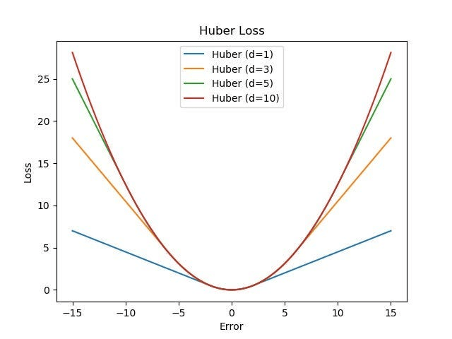
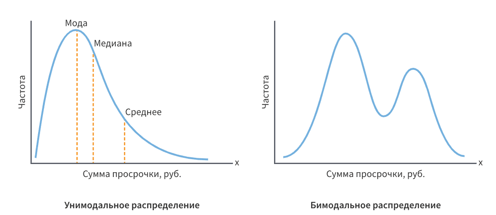

Вопросы по математике
Вопросы по математике с собеседований.
-
Что такое линейная комбинация векторов?
Линейная комбинация векторов $v_1, \dots, v_k$ с коэффициентами $\alpha_1, \dots, \alpha_k \in \mathbb{R}$ — это вектор
$$v = \alpha_1 v_1 + \alpha_2 v_2 + \cdots + \alpha_k v_k = \sum_{i=1}^k \alpha_i v_i.$$
Это базовая операция векторного пространства: масштабировать векторы и складывать результаты.
Связанные понятия, которые почти всегда идут следом:
- Линейная оболочка $\mathrm{span}(v_1,\dots,v_k)$ — множество всех линейных комбинаций данной системы. Это всегда подпространство, и оно наименьшее из содержащих эти векторы.
- Линейная независимость: система независима, если равенство $\sum \alpha_i v_i = 0$ возможно только при всех $\alpha_i = 0$. Иначе один из векторов выражается через остальные и «лишний».
- Базис — независимая система, порождающая всё пространство; любой вектор раскладывается по базису единственным образом, а коэффициенты называются координатами.
- Выпуклая комбинация — частный случай, когда все $\alpha_i \ge 0$ и $\sum \alpha_i = 1$. Множество всех выпуклых комбинаций — выпуклая оболочка; геометрически это «то, что лежит внутри» многогранника на этих точках.
- Аффинная комбинация — только условие $\sum \alpha_i = 1$ без требования неотрицательности; описывает прямые, плоскости и гиперплоскости, не проходящие через начало координат.
Подробнее — линейная комбинация, линейная зависимость и независимость, базис и размерность.
Линейная комбинация — не абстракция, а буквально то, что вычисляют модели.
- Линейная модель. $\hat{y} = \sum_j w_j x_j + b$ — линейная комбинация признаков с весами. Один нейрон делает то же самое, а нелинейность добавляется только функцией активации.
- Умножение матрицы на вектор. $Ax$ — линейная комбинация столбцов $A$ с коэффициентами из $x$. Это самая полезная интерпретация матричного умножения: образ матрицы (column space) — линейная оболочка её столбцов, а её размерность и есть ранг.
- PCA. Главные компоненты — линейные комбинации исходных признаков, выбранные так, чтобы максимизировать дисперсию проекции; см. PCA.
- Ансамбли. Усреднение предсказаний в бэггинге — выпуклая комбинация; взвешенное голосование и стекинг — тоже.
- Эмбеддинги. Сложение и вычитание векторов слов (
king - man + woman ≈ queen) — линейная комбинация в пространстве представлений. - Аугментация mixup. $\tilde{x} = \lambda x_i + (1-\lambda)x_j$ при $\lambda \in [0,1]$ — ровно выпуклая комбинация двух примеров, и меток тоже.
Разница между линейной, аффинной и выпуклой комбинацией. Спрашивают часто. Линейная — без ограничений на коэффициенты (порождает подпространство, всегда содержащее ноль); аффинная — $\sum\alpha_i = 1$ (гиперплоскость, может не содержать ноль); выпуклая — дополнительно $\alpha_i \ge 0$ (ограниченная область — выпуклая оболочка).
Тривиальная комбинация. Нулевой вектор представим всегда — с нулевыми коэффициентами. Определение независимости требует, чтобы только такое представление и было возможно.
Максимальное число независимых векторов в $\mathbb{R}^n$ равно $n$. Любые $n+1$ векторов в $\mathbb{R}^n$ линейно зависимы. Это прямо связано с мультиколлинеарностью: если признаков больше, чем наблюдений, столбцы матрицы объектов заведомо зависимы, система $X^\top X w = X^\top y$ вырождена, и решение не единственно — отсюда необходимость регуляризации.
Не путать линейную комбинацию с линейной функцией. Комбинация — операция над векторами, результат — вектор. Функция $f(x) = w^\top x + b$ при $b \ne 0$ линейной в строгом смысле не является — она аффинная.
-
Что такое ранг матрицы?
Ранг матрицы $A$ — максимальное число линейно независимых строк. Фундаментальный факт: ранг по строкам всегда равен рангу по столбцам, поэтому определение можно давать через любые из них.
Эквивалентные формулировки, полезные в разных задачах:
- размерность линейной оболочки столбцов (образа отображения $x \mapsto Ax$);
- порядок наибольшего ненулевого минора;
- число ненулевых строк после приведения к ступенчатому виду методом Гаусса;
- число ненулевых сингулярных чисел в разложении $A = U\Sigma V^\top$ — самое устойчивое определение с вычислительной точки зрения.
Основные свойства:
$$\mathrm{rank}(A) \le \min(m, n), \qquad \mathrm{rank}(AB) \le \min(\mathrm{rank}\,A,\ \mathrm{rank}\,B),$$ $$\mathrm{rank}(A) + \dim\ker(A) = n \quad (\text{теорема о ранге и дефекте}).$$
Матрица размера $m \times n$ называется матрицей полного ранга, если $\mathrm{rank}(A) = \min(m,n)$. Квадратная матрица обратима тогда и только тогда, когда её ранг полный, что равносильно $\det A \ne 0$.
Подробнее — ранг матрицы, SVD.
Мультиколлинеарность. Если столбцы матрицы объектов $X$ линейно зависимы, $\mathrm{rank}(X) < n$, матрица $X^\top X$ вырождена и не обратима — нормальное уравнение линейной регрессии $w = (X^\top X)^{-1}X^\top y$ не имеет единственного решения. На практике чаще встречается «почти вырожденность»: определитель мал, обратная матрица огромна, и оценки весов становятся неустойчивыми — крошечное изменение данных меняет коэффициенты кардинально. Лечится регуляризацией: гребневая регрессия добавляет $\lambda I$, делая матрицу гарантированно обратимой.
Снижение размерности. PCA и truncated SVD — это приближение матрицы матрицей меньшего ранга. Теорема Эккарта — Янга гарантирует, что усечение SVD до $k$ старших сингулярных чисел даёт наилучшее приближение ранга $k$ по норме Фробениуса.
Рекомендательные системы. Матричная факторизация исходит из гипотезы, что матрица «пользователи × объекты» приближённо низкорангова: интересы описываются небольшим числом скрытых факторов.
LoRA. Дообучение больших моделей обновлением $\Delta W = BA$, где $B$ и $A$ узкие, — это ограничение обновления весов матрицей низкого ранга; отсюда сокращение числа обучаемых параметров на порядки.
В теории ранг — целое число, на практике — вопрос порога. Из-за ошибок округления сингулярные числа почти вырожденной матрицы получаются не нулями, а величинами порядка $10^{-16}$. Поэтому
numpy.linalg.matrix_rankсчитает число сингулярных чисел, превышающих порог $\sigma_{\max}\cdot\max(m,n)\cdot\varepsilon$.Практически важнее не сам ранг, а число обусловленности $\kappa(A) = \sigma_{\max}/\sigma_{\min}$: оно показывает, во сколько раз усиливается ошибка при решении системы. При $\kappa \sim 10^{16}$ (для double) результат не имеет верных знаков.
Отсюда два практических вывода:
- Вычислять ранг через определитель или Гаусса численно плохо; правильный инструмент — SVD.
- Решать МНК через явное обращение $X^\top X$ — плохая идея: число обусловленности возводится в квадрат. Используют QR-разложение или SVD (
numpy.linalg.lstsqделает именно так).
И типичная логическая ошибка: «признаков меньше, чем объектов, значит мультиколлинеарности нет». Ранг может быть неполным и при $n \ll m$ — достаточно двух признаков, один из которых есть линейная функция другого (рост в сантиметрах и в метрах, one-hot-кодирование со всеми категориями сразу плюс свободный член).
-
Какая матрица называется невырожденной?
Квадратная матрица $A$ размера $n \times n$ называется невырожденной (обратимой, non-singular), если существует такая $A^{-1}$, что $AA^{-1} = A^{-1}A = I$.
Ключевой факт: это свойство имеет много эквивалентных формулировок, и на собеседовании ценится умение перечислить несколько. Для квадратной $A$ равносильны:
- существует $A^{-1}$;
- $\det A \ne 0$;
- $\mathrm{rank}(A) = n$ (полный ранг);
- строки (и столбцы) линейно независимы;
- ядро тривиально: $Ax = 0$ только при $x = 0$;
- система $Ax = b$ имеет единственное решение при любом $b$;
- все собственные числа отличны от нуля;
- все сингулярные числа положительны;
- отображение $x \mapsto Ax$ биективно.
Соответственно, вырожденная (singular) матрица — та, у которой $\det A = 0$: она «схлопывает» пространство в подпространство меньшей размерности, теряя информацию, и потому необратима.
Подробнее — определитель матрицы, ранг матрицы.
Определитель — коэффициент, на который отображение $x \mapsto Ax$ изменяет ориентированный объём. Если $\det A = 0$, объём схлопывается в ноль: параллелепипед превращается в плоскую фигуру, размерность образа падает. Восстановить исходный вектор по образу невозможно — множество прообразов бесконечно, поэтому обратного отображения не существует.
Отсюда наглядная связь всех критериев: линейная зависимость столбцов означает, что один из них лежит в оболочке остальных, значит образ занимает не всё пространство, значит ранг неполон, значит объём нулевой, значит определитель равен нулю.
Собственные числа дают ту же картину: $\det A = \prod \lambda_i$, поэтому нулевое собственное число немедленно обнуляет определитель, а соответствующий собственный вектор лежит в ядре.
На практике «$\det A \ne 0$» почти бесполезный критерий. Матрица может быть формально обратима, но настолько близка к вырожденной, что результат вычислений не имеет смысла. Определитель для этого — плохой индикатор: у матрицы $0{,}1 \cdot I_{100}$ определитель равен $10^{-100}$, хотя она отлично обусловлена.
Правильная мера — число обусловленности $\kappa(A) = \sigma_{\max}/\sigma_{\min}$: оно показывает, во сколько раз при решении $Ax = b$ усиливается относительная погрешность входных данных. При $\kappa \sim 10^{16}$ (машинная точность double) в ответе не остаётся верных цифр.
Практические следствия для ML:
- Мультиколлинеарность. Почти зависимые признаки делают $X^\top X$ плохо обусловленной; веса линейной регрессии становятся огромными и неустойчивыми. Гребневая регрессия добавляет $\lambda I$, что сдвигает все собственные числа на $\lambda$ и гарантирует обратимость; см. регуляризация.
- Никогда не обращайте матрицу явно.
np.linalg.inv(A) @ bчисленно хуже и медленнее, чемnp.linalg.solve(A, b); для переопределённых систем —lstsq(через QR или SVD). Обращение $X^\top X$ возводит число обусловленности в квадрат. - Псевдообратная матрица Мура — Пенроуза $A^+$ определена и для вырожденных, и для прямоугольных матриц; она даёт решение МНК с минимальной нормой и вычисляется через SVD.
И терминологическое уточнение: «невырожденная» определяется только для квадратных матриц. Для прямоугольных говорят о матрице полного ранга по строкам или по столбцам и об односторонних обратных.
-
Что такое градиент и какой у него физический смысл?
Для функции многих переменных $f(x_1, \dots, x_n)$ градиент — вектор частных производных:
$$\nabla f(x) = \left(\frac{\partial f}{\partial x_1}, \dots, \frac{\partial f}{\partial x_n}\right)^{\!\top}.$$
Смысл 1: направление наискорейшего роста. Производная по направлению единичного вектора $u$ равна $\partial_u f = \langle \nabla f, u\rangle = \|\nabla f\|\cos\theta$. Она максимальна при $\theta = 0$, то есть когда $u$ сонаправлен градиенту. Значит, $\nabla f$ указывает направление наибыстрейшего возрастания, а $-\nabla f$ — наибыстрейшего убывания. Это прямое следствие неравенства Коши — Буняковского, и именно так стоит обосновывать ответ.
Смысл 2: скорость роста. Длина $\|\nabla f\|$ равна максимальной скорости изменения функции в точке.
Смысл 3: нормаль к линии уровня. Вдоль поверхности уровня функция не меняется, поэтому $\langle\nabla f, u\rangle = 0$ для касательных направлений: градиент перпендикулярен линиям (поверхностям) уровня.
Смысл 4: линейное приближение. $f(x + \Delta) \approx f(x) + \langle\nabla f(x), \Delta\rangle$ — градиент задаёт касательную гиперплоскость.
Отсюда градиентный спуск: чтобы минимизировать функцию потерь, идут против градиента,
$$w_{t+1} = w_t - \eta\,\nabla L(w_t),$$
где $\eta$ — шаг обучения. В точке минимума $\nabla L = 0$ — это необходимое условие экстремума.
Подробнее — градиент и градиентный спуск.
Стандартная метафора: вы стоите на склоне холма в тумане и хотите спуститься. Градиент — направление самого крутого подъёма, антиградиент — самого крутого спуска; вы делаете шаг и повторяете.
Метафора хороша, но у неё есть важные ограничения, которые полезно назвать сразу:
- Наискорейший спуск — не кратчайший путь. В «овраге» (сильно вытянутых линиях уровня, большое число обусловленности гессиана) антиградиент направлен почти поперёк оврага, и траектория зигзагообразно скачет между склонами, продвигаясь вдоль дна очень медленно. Отсюда — momentum, адаптивные шаги, нормализация признаков.
- Градиент локален. Он ничего не знает о рельефе за пределами точки: спуск сходится к локальному минимуму, седловой точке или плато. В высокой размерности проблема не столько локальные минимумы, сколько седловые точки и плато, где градиент близок к нулю.
- Шаг обучения критичен. Слишком большой — расходимость, слишком маленький — вечность. См. проблемы градиентного спуска.
Градиент, производная по направлению и дифференциал. Градиент — вектор; производная по направлению — скаляр, скалярное произведение градиента на направление; дифференциал — линейное отображение. На собеседовании по математике это различие проверяют.
Градиент существует не всегда. Функция должна быть дифференцируемой в точке. У $|x|$, ReLU, hinge loss и $L_1$-регуляризации есть точки излома; там работают с субградиентом.
Градиент — вектор в пространстве параметров, а не в пространстве данных. При обучении нейросети считается $\nabla_w L$ — по весам; градиент по входу $\nabla_x L$ тоже существует и используется в других задачах (adversarial-примеры, Grad-CAM, стилизация).
Форма и размерность. Для скалярной функции векторного аргумента — вектор; для векторной функции — матрица Якоби; вторые производные — матрица Гессе. Автоматическое дифференцирование в PyTorch считает не «градиент функции», а произведение вектора на якобиан (VJP), поэтому
backward()требует скалярного выхода или явного аргументаgrad_outputs; см. прямой и обратный проход. -
Что такое норма вектора и какие нормы бывают?
Норма — функция $\|\cdot\|: \mathbb{R}^n \to \mathbb{R}_{\ge 0}$, формализующая понятие «длины» вектора. Она обязана удовлетворять трём аксиомам:
- Невырожденность: $\|x\| = 0 \iff x = 0$;
- Однородность: $\|\alpha x\| = |\alpha|\,\|x\|$;
- Неравенство треугольника: $\|x + y\| \le \|x\| + \|y\|$.
Семейство $L_p$-норм:
$$\|x\|_p = \left(\sum_{i=1}^n |x_i|^p\right)^{1/p}, \qquad p \ge 1.$$
Основные частные случаи:
- $\|x\|_1 = \sum_i |x_i|$ — манхэттенская норма;
- $\|x\|_2 = \sqrt{\sum_i x_i^2}$ — евклидова, порождена скалярным произведением;
- $\|x\|_\infty = \max_i |x_i|$ — чебышёвская (предел при $p \to \infty$);
- «$L_0$» $= \#\{i : x_i \ne 0\}$ — число ненулевых компонент; нормой не является (нарушает однородность), название условное.
Геометрия единичных шаров $\{x : \|x\|_p \le 1\}$ различается: для $L_1$ это ромб с вершинами на осях, для $L_2$ — круг, для $L_\infty$ — квадрат. Эта разница и объясняет разное поведение регуляризаторов.
Все нормы в конечномерном пространстве эквивалентны — отличаются не более чем в константу раз, поэтому сходимость по одной норме влечёт сходимость по любой другой.
Подробнее — норма, метрика (расстояние).
Это самое частое продолжение вопроса, и на него есть два одинаково хороших объяснения.
Геометрическое. Регуляризованная задача эквивалентна минимизации функции потерь на множестве $\|w\| \le t$. Оптимум достигается там, где линия уровня функции потерь касается границы этого множества. У $L_1$-шара (ромба) граница имеет углы, лежащие на осях координат, и вероятность коснуться именно угла велика; в угле часть координат равна нулю — отсюда разреженность. У $L_2$-шара (круга) граница гладкая, углов нет, и касание почти наверняка происходит в точке со всеми ненулевыми координатами.
Аналитическое. Субдифференциал $|w|$ в нуле — целый отрезок $[-1, 1]$; условие оптимальности $0 \in \nabla\mathcal{L} + \lambda\,\partial|w|$ выполняется для всего диапазона $|\nabla\mathcal{L}| \le \lambda$. Значит, существует интервал значений градиента данных, при котором вес остаётся ровно нулём. У гладкой $L_2$ производная в нуле равна нулю, «залипания» не происходит, и веса лишь уменьшаются пропорционально; см. субградиент и регуляризация.
Регуляризация: Lasso ($L_1$, отбор признаков), Ridge ($L_2$, сглаживание весов и борьба с мультиколлинеарностью), Elastic Net (комбинация).
Функции потерь: MAE — это $L_1$-норма вектора остатков, MSE — квадрат $L_2$-нормы. Отсюда прямое объяснение разной устойчивости к выбросам.
Метрики близости: евклидово расстояние в KNN и KMeans, манхэттенское для разреженных данных, косинусная мера (нормированное скалярное произведение) для эмбеддингов текста — там важно направление, а не длина.
Gradient clipping: ограничение $\|\nabla\|_2 \le c$ — стандартный приём против взрыва градиентов при обучении RNN и трансформеров; см. взрыв и затухание градиентов.
Батч-нормализация и weight decay — тоже операции над нормами.
Adversarial-атаки формулируются как поиск возмущения с ограниченной нормой: $L_\infty$ (каждый пиксель меняется не более чем на $\varepsilon$), $L_2$ (ограничено суммарное изменение), $L_0$ (меняется мало пикселей).
Практические оговорки: в высокой размерности евклидово расстояние теряет различительную способность (проклятие размерности — все точки оказываются примерно равноудалены), поэтому для эмбеддингов чаще берут косинусную меру. И не путайте норму вектора с нормой матрицы: у матриц есть свои нормы (Фробениуса, спектральная, ядерная), и они используются в других задачах — например, ядерная норма как выпуклая релаксация ранга.
-
Почему MAE недифференцируема?
MAE содержит модуль: $\mathcal{L} = |y - \hat y|$. Функция $|x|$ не дифференцируема в точке $x = 0$, потому что односторонние производные там не совпадают:
$$\lim_{h\to 0^+}\frac{|h| - 0}{h} = +1, \qquad \lim_{h\to 0^-}\frac{|h| - 0}{h} = -1.$$
Предела разностного отношения нет — значит, производной в нуле не существует. Во всех остальных точках производная есть и равна $\mathrm{sign}(x)$.
Практически это не мешает оптимизации, потому что используется субградиент — обобщение производной для выпуклых функций:
$$\partial |x| = \begin{cases} 1, & x > 0,\\ -1, & x < 0,\\ [-1, 1], & x = 0. \end{cases}$$
В точке излома субградиентом является любое число из отрезка $[-1, 1]$; на практике фреймворки просто возвращают одно значение (PyTorch для
torch.absв нуле даёт 0). Субградиентный спуск для выпуклых функций сходится, хотя и медленнее градиентного — со скоростью $O(1/\sqrt{t})$ вместо $O(1/t)$.Важно, что вероятность попасть ровно в $\hat y = y$ на вещественных данных практически нулевая, поэтому точка излома почти никогда не достигается в буквальном смысле — проблема скорее в поведении вблизи неё.
Настоящая практическая особенность MAE не в недифференцируемости, а в том, что её градиент по модулю постоянен и равен 1 независимо от величины ошибки.
Сравните с MSE, у которой градиент $2(\hat y - y)$ пропорционален ошибке: по мере приближения к минимуму шаги естественным образом уменьшаются, и оптимизация плавно «садится» в точку. У MAE шаг остаётся прежним, поэтому вблизи оптимума параметры «дрожат» — перепрыгивают минимум туда-обратно с амплитудой порядка $\eta$.
Лечится это уменьшением шага обучения по расписанию (learning rate decay) или переходом на Huber loss, которая ведёт себя как MSE в окрестности нуля и как MAE на хвостах — то есть решает обе проблемы сразу.
Обратная сторона того же свойства — устойчивость: выброс с ошибкой 1000 даёт такой же по величине вклад в градиент, как ошибка 0,1. Именно поэтому MAE оценивает условную медиану, а MSE — условное среднее.
Недифференцируемость — вовсе не исключительный случай в машинном обучении, и это стоит сказать:
- ReLU $\max(0, x)$ — излом в нуле; фреймворки берут производную 0 (иногда 1). Никаких проблем при обучении это не создаёт.
- Hinge loss $\max(0, 1 - y f(x))$ в SVM — излом в точке $yf(x) = 1$.
- $L_1$-регуляризация $\lambda\|w\|_1$ — излом в нуле по каждой координате. Именно этот излом и порождает разреженность: субдифференциал в нуле — целый отрезок, поэтому существует диапазон значений градиента данных, при котором оптимум остаётся ровно в нуле. У гладкой $L_2$-регуляризации такого эффекта нет — она лишь уменьшает веса, не обнуляя их. См. регуляризация.
- Max-pooling,
torch.clamp, квантование — везде изломы.
Про специализированные методы: для задач вида «гладкое + $L_1$» существуют более быстрые алгоритмы, чем субградиентный спуск, — проксимальный градиентный метод (ISTA/FISTA), координатный спуск (используется в
sklearn.linear_model.Lasso), soft-thresholding. Упоминание proximal-методов на собеседовании по оптимизации ценится: оно показывает, что вы понимаете, почему субградиентный спуск — не единственный и не лучший выход. -
Докажи инвариантность Softmax к сдвигу
Softmax переводит вектор логитов в распределение вероятностей:
$$\mathrm{softmax}(z)_i = \frac{e^{z_i}}{\sum_{j=1}^K e^{z_j}}.$$
Утверждение. Для любой константы $c$ и любого $i$ выполняется $\mathrm{softmax}(z + c\mathbf{1})_i = \mathrm{softmax}(z)_i$.
Доказательство. Подставим сдвинутые логиты и воспользуемся свойством $a^{b+c} = a^b a^c$:
$$\mathrm{softmax}(z + c)_i = \frac{e^{z_i + c}}{\sum_{j=1}^K e^{z_j + c}} = \frac{e^{z_i}\,\textcolor{red}{e^{c}}}{\textcolor{red}{e^{c}}\sum_{j=1}^K e^{z_j}} = \frac{e^{z_i}}{\sum_{j=1}^K e^{z_j}} = \mathrm{softmax}(z)_i. \qquad \blacksquare$$
Общий множитель $e^c$ выносится из суммы в знаменателе и сокращается с числителем.
Что это означает. Softmax зависит только от разностей логитов $z_i - z_j$, а не от их абсолютных значений. Следовательно, отображение не инъективно: у каждого распределения вероятностей есть целое семейство (прямая) порождающих его логитов. Отсюда, кстати, следует, что при обучении логиты определены с точностью до общего сдвига — модель может свободно «плавать» вдоль этого направления, и градиент по нему равен нулю.
Подробнее про softmax и функции потерь классификации — функции потерь классификации.
Инвариантность — не абстрактный факт, а основа стандартной реализации softmax во всех фреймворках.
Проблема:
float32переполняется при $e^{z}$ уже около $z \approx 89$, аfloat64— около $z \approx 710$. Логиты большой модели легко достигают сотен, и наивное вычисление даётinf, а затемinf/inf = nan. С другой стороны, при сильно отрицательных $z$ экспонента обнуляется, и получается0/0.Решение — сдвинуть логиты так, чтобы максимум стал нулём:
$$\mathrm{softmax}(z)_i = \frac{e^{z_i - \max_j z_j}}{\sum_k e^{z_k - \max_j z_j}}.$$
Результат математически тот же (по доказанной инвариантности), но теперь все показатели неположительны, максимальная экспонента равна ровно 1, переполнения нет, а знаменатель не меньше 1 — деления на ноль тоже нет.
import numpy as np def softmax_naive(z): e = np.exp(z) return e / e.sum() def softmax_stable(z): e = np.exp(z - z.max()) return e / e.sum() z = np.array([1000., 1001., 1002.]) print(softmax_naive(z)) # [nan nan nan] print(softmax_stable(z)) # [0.09003057 0.24472847 0.66524096]Тот же приём стоит за log-sum-exp: $\log\sum_j e^{z_j} = m + \log\sum_j e^{z_j - m}$, где $m = \max_j z_j$. Именно поэтому в PyTorch рекомендуется
F.cross_entropy(принимает логиты и делает всё внутри устойчиво) вместоlog(softmax(z))— последнее теряет точность дважды.«А инвариантен ли softmax к масштабированию?» Нет. Умножение логитов на $T$ меняет распределение: $\mathrm{softmax}(z/T)$ при $T \to 0$ стремится к one-hot (argmax), при $T \to \infty$ — к равномерному. Это температура, и на ней построены sampling в языковых моделях, дистилляция знаний и калибровка вероятностей (temperature scaling).
«Softmax — это гладкий argmax или гладкий max?» Формально это гладкая версия argmax (возвращает распределение, а не значение). Гладкой версией максимума является log-sum-exp. Название «softmax» исторически неточно, и на этом строят каверзные вопросы.
«Сколько степеней свободы у $K$-классового softmax?» $K-1$, а не $K$ — именно из-за доказанной инвариантности. Поэтому для двух классов softmax сводится к сигмоиде от разности логитов, и обучать две выходные единицы вместо одной избыточно.
«Как это связано с сигмоидой?» $\mathrm{softmax}([z_1, z_2])_1 = \sigma(z_1 - z_2)$ — прямое следствие того же свойства.
-
Какие функции потерь можно оптимизировать для регрессии? Можно ли использовать MAE/MAPE?
Основные функции потерь регрессии и то, что каждая из них на самом деле оценивает:
MSE $\ \frac1n\sum (y_i - \hat y_i)^2$. Гладкая, выпуклая, градиент линеен по ошибке. Её минимум достигается на условном среднем $\mathbb{E}[Y \mid X]$ — то есть модель, обученная на MSE, предсказывает среднее. Обратная сторона: квадрат усиливает выбросы, один аномальный объект может увести модель.
MAE $\ \frac1n\sum |y_i - \hat y_i|$. Минимизируется на условной медиане, поэтому устойчива к выбросам. Недифференцируема в нуле, но это не препятствие: используется субградиент
$$\partial |x| = \begin{cases} 1, & x > 0 \\ -1, & x < 0 \\ [-1, 1], & x = 0 \end{cases}$$
Практическая особенность: градиент постоянен по модулю, поэтому вблизи минимума шаги не затухают и обучение «дрожит» — помогает уменьшение шага (learning rate decay).
Huber loss — компромисс: квадратична при малых ошибках (гладкость и затухающий градиент у минимума), линейна при больших (устойчивость к выбросам):
$$L_\delta = \begin{cases} \tfrac12 (y - \hat y)^2, & |y - \hat y| < \delta,\\[2pt] \delta|y - \hat y| - \tfrac12\delta^2, & \text{иначе.} \end{cases}$$

Huber loss MAPE $\ \frac{100\%}{n}\sum \left|\frac{y_i - \hat y_i}{y_i}\right|$ как функцию потерь использовать не следует: в знаменателе стоит $y_i$, поэтому при $y_i \to 0$ возникают сингулярности, а градиенты становятся неограниченно большими и нестабильными. Кроме того, MAPE асимметрична — занижение прогноза штрафуется слабее, чем завышение, и модель систематически смещается вниз. MAPE уместна как метрика после обучения, а не как оптимизируемый функционал.
Про степени выше второй: $|y - \hat y|^p$ при $p > 2$ делает обучение нестабильным — влияние выбросов на градиент растёт слишком быстро.
Подробнее — функции потерь регрессии и метрики регрессии.
Ключевая мысль, которая превращает ответ из перечисления в понимание: разные лоссы дают модели с разным смыслом прогноза.
- MSE $\to$ условное среднее. Подходит, если ошибки симметричны и важна сумма (общая выручка, суммарный объём).
- MAE $\to$ условная медиана. Подходит, если важен «типичный» объект, а хвосты — шум.
- Quantile loss (pinball) $\to$ условный $\tau$-квантиль: $$L_\tau(e) = \max(\tau e,\ (\tau - 1)e), \quad e = y - \hat y.$$ При $\tau = 0{,}5$ это MAE с точностью до множителя. Именно так строят прогнозные интервалы и решают задачи с асимметричной ценой ошибки: например, при планировании запасов недопоставка дороже излишка, и берут $\tau = 0{,}9$.
- Log-MSE (MSE на $\log(1+y)$) $\to$ работа в мультипликативной шкале; уместно, когда важна относительная, а не абсолютная ошибка, и $y > 0$. Это корректная замена MAPE: сингулярностей нет, а относительность сохраняется.
- Poisson / Tweedie deviance — для счётных и полунепрерывных величин (число заказов, страховые выплаты), где дисперсия растёт вместе со средним.
Слабый ответ — перечислить MSE, MAE, Huber. Сильный — начать с вопроса «что должна предсказывать модель» и вывести лосс из ответа: среднее, медиану или квантиль; симметричны ли издержки ошибки; есть ли выбросы; в абсолютной или относительной шкале измеряется качество.
Отдельно стоит развести лосс и метрику. Оптимизировать можно только то, что дифференцируемо (или хотя бы субдифференцируемо) и численно устойчиво; оценивать — что угодно, включая MAPE, $R^2$, WAPE. Расхождение допустимо и нормально, но должно быть осознанным: если бизнес-метрика — MAPE, разумная замена в обучении — MAE на логарифме таргета или weighted MAE с весами $1/y_i$.
Практические оговорки, которые ценятся: MSE чувствительна к масштабу таргета (нормировка помогает сходимости), Huber требует подбора $\delta$ (часто берут по перцентилю остатков), а на данных с тяжёлым хвостом полезно сравнить обучение на $y$ и на $\log y$ — разница бывает решающей.
-
Что такое субградиент и зачем он нужен?
Субградиент обобщает понятие градиента на выпуклые функции, которые могут быть недифференцируемы в отдельных точках.
Определение. Для выпуклой функции $f$ вектор $g$ называется субградиентом в точке $x_0$, если для всех $x$ выполняется
$$f(x) \ge f(x_0) + g^\top (x - x_0).$$
Геометрически: аффинная функция с наклоном $g$, проходящая через точку $(x_0, f(x_0))$, лежит не выше графика $f$ — то есть является опорной гиперплоскостью снизу. Множество всех таких $g$ называется субдифференциалом $\partial f(x_0)$.
Ключевые свойства:
- Для выпуклой функции субдифференциал непуст во всех внутренних точках области определения.
- В точках дифференцируемости он состоит из единственного элемента — обычного градиента. То есть субградиент — честное обобщение.
- В точках излома это целое выпуклое множество.
Пример. $f(x) = |x|$: при $x > 0$ субградиент равен 1, при $x < 0$ равен $-1$, а в нуле субдифференциал — весь отрезок:
$$\partial |x|\big|_{x=0} = [-1, 1].$$
Условие оптимальности формулируется исключительно красиво: $x^*$ — точка глобального минимума выпуклой $f$ тогда и только тогда, когда $0 \in \partial f(x^*)$. Для $|x|$ это выполняется в нуле, так как $0 \in [-1, 1]$.
Подробнее — градиент, экстремум функции.
Недифференцируемые функции в ML встречаются повсеместно, и субградиент — минимальный инструмент, позволяющий их оптимизировать:
- MAE $|y - \hat y|$ — излом при нулевой ошибке; см. почему MAE недифференцируема.
- Hinge loss $\max(0, 1 - y f(x))$ в SVM — излом на границе отступа; см. SVM.
- $L_1$-регуляризация $\lambda\|w\|_1$ — излом по каждой координате в нуле.
- ReLU $\max(0, x)$ — излом в нуле; фреймворки просто подставляют одно из значений субдифференциала.
- Max-pooling,
clamp, квантование — то же самое.
Субградиентный спуск устроен как обычный градиентный, но с любым элементом субдифференциала:
$$w_{t+1} = w_t - \eta_t\, g_t, \qquad g_t \in \partial f(w_t).$$
Важное отличие: он не является методом спуска — значение функции на отдельном шаге может вырасти, поэтому отслеживают лучшее достигнутое значение. Сходимость требует убывающего шага ($\eta_t \to 0$, $\sum\eta_t = \infty$) и медленнее градиентного: $O(1/\sqrt{t})$ против $O(1/t)$ для гладких выпуклых функций.
Субдифференциал объясняет главный практический эффект $L_1$-регуляризации. В нуле $\partial|w| = [-1, 1]$ — целый отрезок. Условие оптимальности $0 \in \nabla \mathcal{L}(w) + \lambda\,\partial|w|$ выполняется для всего диапазона $|\nabla\mathcal{L}| \le \lambda$, поэтому существует интервал значений градиента данных, при котором оптимальный вес остаётся ровно нулём. У гладкой $L_2$-регуляризации субдифференциал в нуле — единственная точка $\{0\}$, и такого «залипания» не возникает: веса уменьшаются, но не обнуляются. См. регуляризация.
При этом субградиентный спуск — не лучший способ решать такие задачи. Для функций вида «гладкая + простая негладкая» существуют более быстрые методы:
- Проксимальный градиентный спуск (ISTA/FISTA) — шаг по гладкой части плюс прокс-оператор негладкой; для $L_1$ прокс — это soft-thresholding $\mathrm{sign}(w)\max(|w| - \eta\lambda, 0)$, который явно обнуляет малые веса. Скорость $O(1/t)$ и $O(1/t^2)$ соответственно.
- Координатный спуск — используется в
sklearn.linear_model.Lasso.
Упоминание проксимальных методов показывает, что вы понимаете: субградиент решает вопрос корректности, но не эффективности.
И терминологическая точность: субградиент определён для выпуклых функций. Для невыпуклых существуют обобщения (субдифференциал Кларка, предельный субдифференциал), и говорить «субградиент ReLU-сети» строго корректно только покомпонентно.
-
Разница между средним и медианой?
Обе величины отвечают на вопрос «где центр данных», но по-разному и с разной устойчивостью.
Среднее учитывает величину каждого наблюдения: $\bar{x} = \frac1n\sum x_i$. Оно минимизирует сумму квадратов отклонений и потому «притягивается» к экстремальным значениям. Точка пробоя равна нулю: одного достаточно большого выброса хватит, чтобы увести среднее сколь угодно далеко.
Медиана учитывает только порядок наблюдений: это значение, делящее упорядоченную выборку пополам. Она минимизирует сумму модулей отклонений и устойчива — чтобы её сместить произвольно, нужно испортить больше половины данных.
Классический пример: средняя зарплата по стране искажается верхним хвостом, медианная — нет. Сообщение «за $K$ лет средняя зарплата выросла на $N\%$» может ничего не говорить о большинстве: рост мог целиком прийтись на верхние проценты распределения. Медианная зарплата отвечает на вопрос «а что у типичного человека».
Соотношение между ними — индикатор асимметрии: при правостороннем хвосте среднее $>$ медианы, при левостороннем — наоборот, при симметричном распределении они совпадают.
Среднее уместно, когда:
- распределение примерно симметрично и без тяжёлых хвостов;
- важна сумма: общая выручка равна среднему чеку, умноженному на число заказов, — медиана такого свойства не имеет;
- нужны дальнейшие статистические выводы: у среднего простая стандартная ошибка $\sigma/\sqrt n$ и работает ЦПТ.
Медиана уместна, когда:
- распределение сильно скошено (доходы, цены, длительность сессий, размеры файлов);
- в данных есть настоящие, но редкие экстремумы, которые нельзя удалить;
- нужен «типичный» объект, а не агрегат.
Есть и промежуточные варианты: усечённое среднее (отбросить по 5 % с краёв) и винзоризованное среднее (заменить крайние значения на пороговые) — они сохраняют часть эффективности среднего и часть устойчивости медианы.
Полезная связь с ML: обучение на MSE даёт условное среднее, на MAE — условную медиану. Если целевая переменная скошена и важен типичный объект, MAE (или квантильный лосс) даст более осмысленную модель, чем MSE; см. функции потерь регрессии.
Медиана — не панацея. Она игнорирует величину значений, а иногда именно величина и важна. Медианный чек может не измениться при удвоении выручки от крупных клиентов — для бизнеса это существенное событие, а метрика его не заметит.
Медиана хуже по эффективности. На нормальных данных дисперсия выборочной медианы примерно в $\pi/2 \approx 1{,}57$ раза больше, чем у среднего. То есть за устойчивость платят точностью, и на небольших чистых выборках среднее предпочтительнее.
Медианы не складываются. Медиана объединения двух групп не выражается через их медианы, а среднее — выражается (как взвешенное). Это ограничивает медиану в иерархических отчётах и делает её неудобной для распределённых вычислений (точная медиана требует полной сортировки; на практике берут приближённые алгоритмы — t-digest, GK-sketch).
Правильный вывод — показывать распределение. Одно число любой природы скрывает бимодальность и хвосты. В отчётах по метрикам стандартом является медиана вместе с p25/p75 и p95/p99, а в мониторинге latency — именно перцентили, а не среднее.
-
Что такое центральная предельная теорема (ЦПТ)?
Пусть $X_1, \dots, X_n$ — независимые одинаково распределённые случайные величины с конечными $\mathbb{E}X = \mu$ и $\mathbb{D}X = \sigma^2 > 0$. Тогда нормированная сумма сходится по распределению к стандартному нормальному:
$$\frac{\sum_{i=1}^n X_i - n\mu}{\sigma\sqrt{n}} \;\xrightarrow[n\to\infty]{d}\; \mathcal{N}(0, 1),$$
что эквивалентно записи через выборочное среднее:
$$\sqrt{n}\,\frac{\bar{X}_n - \mu}{\sigma} \;\xrightarrow{d}\; \mathcal{N}(0,1), \qquad \text{то есть } \bar{X}_n \approx \mathcal{N}\!\left(\mu, \frac{\sigma^2}{n}\right).$$
Смысл: каким бы ни было распределение отдельного наблюдения — асимметричным, дискретным, с несколькими модами, — распределение его выборочного среднего при росте $n$ становится нормальным. Требуется только независимость, одинаковая распределённость и конечная дисперсия.
Отсюда два практических следствия, ради которых теорему и вспоминают:
- Стандартная ошибка среднего равна $\sigma/\sqrt{n}$ — точность оценки растёт как корень из объёма выборки. Чтобы вдвое сузить интервал, нужно вчетверо больше данных.
- Весь аппарат статвывода — $z$- и $t$-тесты, доверительные интервалы, A/B-тесты — опирается на нормальность именно среднего, а не самих данных.
Подробнее — ЦПТ и нормальное распределение.
Правило «$n > 30$» — грубое эвристическое, и оно верно далеко не всегда. Скорость сходимости зависит от асимметрии и тяжести хвостов исходного распределения (теорема Берри — Эссеена оценивает погрешность величиной порядка $\rho/(\sigma^3\sqrt{n})$, где $\rho$ — третий абсолютный момент):
- симметричное распределение без выбросов (равномерное) — достаточно $n \approx 10$;
- умеренно скошенное (экспоненциальное) — порядка 50–100;
- сильно скошенное с тяжёлым хвостом (логнормальное, выручка на пользователя, где 1 % клиентов даёт половину дохода) — могут потребоваться десятки тысяч наблюдений;
- бинарная величина с редким событием — правило $np \ge 10$ и $n(1-p) \ge 10$: при конверсии 0,1 % тридцати наблюдений категорически мало.
Практический способ проверки — bootstrap: построить распределение выборочного среднего и посмотреть, насколько оно похоже на нормальное. Если нет — использовать bootstrap вместо $t$-теста.
Нет конечной дисперсии. Для распределения Коши среднее не сходится ни к чему: среднее $n$ наблюдений имеет то же распределение Коши, что одно наблюдение. Тяжёлые хвосты вида $x^{-\alpha}$ при $\alpha \le 2$ — тот же случай.
Зависимые наблюдения. Временные ряды, сессии одного пользователя, наблюдения внутри кластера: эффективный размер выборки меньше формального, и стандартная ошибка $\sigma/\sqrt{n}$ занижена. Отсюда завышенная значимость в A/B-тестах, где рандомизировали по пользователям, а считали по кликам.
Разные распределения (нарушение i.i.d.) — существуют обобщения (условие Линдеберга), но наивное применение формулы некорректно.
И два постоянных заблуждения:
- «ЦПТ утверждает, что данные распределены нормально» — нет, нормально распределено среднее (или сумма). Рост зарплат от применения ЦПТ нормальным не станет.
- «Из ЦПТ следует, что при большом $n$ можно использовать любой параметрический тест» — нет: тесты на дисперсию, на медиану и критерии, чувствительные к форме распределения, ЦПТ не спасает.
-
Что такое доверительный интервал?
Доверительный интервал уровня $1-\alpha$ — это интервал, построенный по выборке такой процедурой, что при многократном повторении эксперимента доля интервалов, накрывших истинное значение параметра, стремится к $1-\alpha$.
Ключевая тонкость формулировки: случаен интервал, а не параметр. Истинное $\mu$ — фиксированное неизвестное число; конкретный посчитанный интервал $[1{,}2;\ 3{,}4]$ либо содержит его, либо нет. Вероятность 0,95 относится к процедуре, а не к этому конкретному результату. Фраза «с вероятностью 95 % истинное значение лежит в интервале» строго говоря неверна в частотном подходе (она верна для байесовского credible interval).
Классический интервал для среднего при неизвестной дисперсии:
$$\bar{X} \pm t_{1-\alpha/2,\,n-1}\,\frac{s}{\sqrt{n}},$$
где $s$ — выборочное стандартное отклонение. При известной $\sigma$ или большом $n$ квантиль $t$ заменяется на $z$ (для 95 % — на 1,96).
Ширина интервала пропорциональна $1/\sqrt{n}$: чтобы сузить его вдвое, нужно вчетверо больше данных.
Подробнее — доверительные интервалы.
Двусторонний интервал уровня $1-\alpha$ и двусторонний тест уровня $\alpha$ — эквивалентны: гипотеза $H_0: \mu = \mu_0$ отвергается тогда и только тогда, когда $\mu_0$ не попадает в интервал. То есть интервал содержит в себе всю информацию теста, и сверх того — оценку величины эффекта.
Именно поэтому в отчётах по экспериментам интервал предпочтительнее $p$-value:
- «$p = 0{,}03$» говорит лишь «эффект есть»;
- «эффект $+2{,}1\%$, ДИ $[0{,}3\%;\ 3{,}9\%]$» говорит и что эффект есть, и что он может оказаться как незначительным, так и заметным, — и это уже основание для решения.
Обратная ситуация не менее важна: интервал $[-0{,}1\%;\ +0{,}1\%]$ при $p = 0{,}9$ — это не «ничего не узнали», а сильный результат: эффект точно мал. А интервал $[-5\%;\ +5\%]$ при том же $p$ означает, что данных просто не хватило.
Для метрик без аналитической формулы (медиана, перцентили, отношения) интервал строят бутстрапом.
«95 % данных лежат в интервале». Нет, это интервал для параметра (среднего), а не для наблюдений. Интервал, накрывающий 95 % наблюдений, называется толерантным или предиктивным и заметно шире.
«Если интервалы двух групп пересекаются, различия нет». Неверно: пересечение интервалов — более консервативный критерий, чем тест на разность. Правильно строить интервал для разности и смотреть, содержит ли он ноль.
Использование $z$ вместо $t$ на малых выборках. При $n < 30$ и неизвестной дисперсии это систематически занижает ширину интервала.
Асимметричные распределения. Для конверсии, близкой к 0 или 1, обычный интервал Вальда ($\hat p \pm z\sqrt{\hat p(1-\hat p)/n}$) выходит за пределы $[0,1]$ и имеет неверное покрытие; используют интервал Уилсона или Клоппера — Пирсона.
Множественные интервалы. Двадцать 95 %-х интервалов — и один из них в среднем промахивается. При одновременном анализе многих метрик нужна поправка.
-
Что такое односторонние и двусторонние альтернативы в статтестах?
Различие в том, какие отклонения от нулевой гипотезы считаются свидетельством против неё.
Двусторонняя альтернатива: $H_0: \mu = \mu_0$ против $H_1: \mu \ne \mu_0$. Отвергаем $H_0$ при отклонении в любую сторону. Критическая область состоит из двух хвостов по $\alpha/2$ каждый; для $\alpha = 0{,}05$ критическое значение $z = \pm 1{,}96$.
Односторонняя альтернатива: $H_0: \mu \le \mu_0$ против $H_1: \mu > \mu_0$ (или симметрично). Критическая область — один хвост площадью $\alpha$; для $\alpha = 0{,}05$ критическое значение $z = 1{,}645$.
Отсюда главное следствие: при одном и том же $\alpha$ односторонний тест мощнее — порог ниже, поэтому эффект обнаруживается на меньшей выборке (примерно на 20 % меньше). Плата за это — полная слепота к эффекту в противоположную сторону: если метрика значимо упала, односторонний тест «вверх» этого просто не заметит и вернёт большое $p$-value.
Связь с доверительными интервалами прямая: двусторонний тест уровня $\alpha$ эквивалентен проверке, попадает ли $\mu_0$ в двусторонний интервал $1-\alpha$; односторонний — односторонней (полубесконечной) границе.
Условие ровно одно, и оно жёсткое: до просмотра данных должно быть содержательно ясно, что отклонение в противоположную сторону либо невозможно, либо приведёт ровно к тому же решению, что и отсутствие эффекта.
Примеры, где это выполняется:
- Проверка «новая версия модели не хуже старой» (тест на неменьшесть, non-inferiority): если новая хуже — не выкатываем, если равна — тоже не выкатываем. Решение одинаковое, значит различать эти случаи не нужно.
- Физически односторонняя величина: «добавка ускорителя не может замедлить реакцию».
Примеры, где не выполняется:
- Продуктовый A/B-тест. Изменение интерфейса может как улучшить, так и ухудшить конверсию, и падение — критически важная информация. Здесь нужен двусторонний тест.
- Любая ситуация, где отрицательный эффект потребует отката или разбирательства.
Отдельная практика — guardrail-метрики: там как раз применяют односторонний тест «не ухудшилось ли», потому что улучшение guardrail-метрики не влияет на решение.
Посмотреть на данные, увидеть, что эффект положительный, и после этого выбрать односторонний тест «вверх» — это удвоение фактической вероятности ошибки I рода. Формально $\alpha$ равно 0,05, реально — 0,10, потому что вы бы выбрали другую сторону при обратном знаке. Такая практика относится к $p$-hacking.
Второе распространённое злоупотребление — переход на односторонний тест, когда двусторонний дал $p = 0{,}07$. Деление $p$-value пополам «чтобы получилось значимо» — тот же приём под другим соусом.
Практические рекомендации:
- По умолчанию — двусторонний тест. Он консервативнее, а разница в мощности редко критична.
- Сторона альтернативы фиксируется в дизайне эксперимента, до сбора данных, вместе с $\alpha$, метрикой и размером выборки.
- В отчёте всегда явно указывайте, какой тест использован:
scipy.stats.ttest_indпо умолчанию двусторонний, и параметрalternative='greater'меняет смысл результата. - Соотношение $p_{\text{одност.}} = p_{\text{двуст.}}/2$ верно лишь когда наблюдаемый эффект направлен в сторону альтернативы; в противном случае $p_{\text{одност.}} = 1 - p_{\text{двуст.}}/2$, то есть близко к единице.
-
Что такое ошибка первого/второго рода?
При проверке гипотезы возможны две ошибки, и они принципиально несимметричны.
Ошибка I рода (false positive) — отвергнуть $H_0$, когда она верна. «Увидели эффект, которого нет». Её вероятность обозначается $\alpha$ и задаётся исследователем — это и есть уровень значимости (обычно 0,05).
Ошибка II рода (false negative) — не отвергнуть $H_0$, когда верна $H_1$. «Пропустили реальный эффект». Её вероятность $\beta$; величина $1-\beta$ называется мощностью критерия и обычно планируется на уровне 0,8.
$H_0$ верна $H_1$ верна Не отвергли $H_0$ верно, $1-\alpha$ ошибка II рода, $\beta$ Отвергли $H_0$ ошибка I рода, $\alpha$ верно (мощность), $1-\beta$ Между ними существует размен: при фиксированной выборке снижение $\alpha$ увеличивает $\beta$, и наоборот. Единственный способ уменьшить обе — увеличить размер выборки $n$ (или снизить дисперсию метрики, что эквивалентно).
Мощность растёт с ростом $n$, с ростом истинного размера эффекта и с уменьшением дисперсии. Именно из уравнения на мощность выводится формула размера выборки.
Подробнее — ошибки первого и второго рода.
Значения 0,05 и 0,8 — конвенция, а не закон природы. Осмысленный выбор исходит из цены каждой ошибки:
- Скрининговый медицинский тест. Пропустить болезнь (ошибка II рода) намного дороже, чем ложно направить на дообследование. Значит, мощность важнее, и $\alpha$ можно взять больше.
- Выкатка дорогой фичи. Внедрить бесполезное изменение — потратить деньги на разработку и поддержку. Здесь ошибка I рода дороже, и $\alpha$ ужесточают до 0,01.
- Guardrail-метрики в A/B. Гипотеза «мы ничего не сломали» проверяется как раз на мощность: важно не пропустить ухудшение, поэтому здесь смотрят на $\beta$.
В ML те же две ошибки живут под именами FP и FN и напрямую задают выбор порога классификатора: сдвиг порога — это ровно движение по кривой размена между ними, а ROC-кривая — график этого размена. Precision и recall — переформулировка тех же величин. См. метрики классификации.
«Не отвергли $H_0$» не значит «$H_0$ верна». Это значит «данных не хватило, чтобы её отвергнуть». Отсутствие доказательства — не доказательство отсутствия. Правильный вывод формулируется через доверительный интервал: «эффект лежит между −0,2 % и +0,5 %», а не «эффекта нет».
Недомощные тесты. Эксперимент с мощностью 0,3 в 70 % случаев не обнаружит реальный эффект. Хуже того, у недомощных тестов найденные значимые эффекты систематически завышены по величине (winner's curse) — потому что пройти порог значимости может только случайно большая оценка.
$\alpha$ — не вероятность того, что вывод ошибочен. $\alpha$ — вероятность ложного срабатывания при условии, что $H_0$ верна. Доля ошибочных открытий среди всех значимых результатов (FDR) зависит ещё и от того, какая доля проверяемых гипотез верна: при 5 % реально работающих идей и $\alpha = 0{,}05$ большинство «побед» окажутся ложными.
Множественные сравнения увеличивают фактический $\alpha$: 20 метрик при 0,05 дают в среднем одно ложное срабатывание. Поправки — Бонферрони (консервативная), Холма, Бенджамини — Хохберга (контроль FDR).
-
Что такое $p$-value?
$p$-value — вероятность получить наблюдаемое значение статистики или более экстремальное, при условии, что нулевая гипотеза верна:
$$p = \mathbb{P}(T \ge t_{\text{набл}} \mid H_0).$$
Каждое слово здесь существенно:
- «при условии, что $H_0$ верна» — это условная вероятность данных при гипотезе, а не гипотезы при данных. $p$-value не равно вероятности того, что $H_0$ верна.
- «или более экстремальное» — учитывается весь хвост, а не только конкретный результат: у непрерывной статистики вероятность точного значения равна нулю.
Логика применения: если $H_0$ верна, малое $p$-value означает, что мы наблюдали редкое событие. Стандартный вывод — либо произошла редкость, либо $H_0$ неверна; при $p < \alpha$ выбирают вторую версию и отвергают $H_0$.
Порог $\alpha$ (обычно 0,05) — это допустимая вероятность ошибки I рода, и он должен быть выбран до эксперимента.
Полезное свойство: при верной $H_0$ и непрерывной статистике $p$-value распределено равномерно на $[0, 1]$. Именно поэтому доля ложных срабатываний равна ровно $\alpha$, и именно поэтому 20 независимых тестов при $\alpha = 0{,}05$ в среднем дают одно «значимое» на чистом шуме.
Подробнее — статистические гипотезы.
Список типичных неверных интерпретаций — материал почти любого собеседования по статистике:
- Не вероятность того, что $H_0$ верна. Это $\mathbb{P}(\text{данные} \mid H_0)$, а не $\mathbb{P}(H_0 \mid \text{данные})$. Вторая величина требует априорного распределения и байесовского подхода.
- Не вероятность того, что результат случаен.
- Не размер эффекта. $p = 0{,}001$ не означает «эффект большой» — оно означает «эффект уверенно отличается от нуля». На миллионе наблюдений эффект в 0,01 % даст крошечное $p$-value.
- Не вероятность воспроизводимости. $p = 0{,}05$ не значит, что при повторе эксперимента в 95 % случаев результат подтвердится.
- $p > 0{,}05$ не доказывает отсутствие эффекта. Это либо отсутствие эффекта, либо недостаток мощности. Различить помогает только доверительный интервал.
Правильная практика — сообщать не только $p$-value, но и точечную оценку эффекта с интервалом. Формулировка «конверсия выросла на 2,1 %, ДИ $[0{,}3\%; 3{,}9\%]$, $p = 0{,}02$» информативна; одно «$p = 0{,}02$» — почти нет.
Практики, которые превращают $p$-value в бессмыслицу:
- Подглядывание (peeking). Проверять значимость каждый день и останавливаться при первом $p < 0{,}05$ повышает фактическую вероятность ложного срабатывания до 20–30 %. При верной $H_0$ $p$-value блуждает случайно и рано или поздно опустится ниже порога.
- Множественные сравнения. Много метрик, много срезов, много вариантов — каждый тест добавляет шанс ложного открытия. Поправки: Бонферрони (консервативная), Холма, Бенджамини — Хохберга (контроль FDR).
- Выбор метрики или подгруппы постфактум. «В целом эффекта нет, но у пользователей iOS из Москвы есть» — почти всегда артефакт.
- Изменение правила обработки выбросов после просмотра результата.
- Публикация только удачных экспериментов (publication bias) — искажает картину на уровне всей организации.
Профилактика простая и организационная: заранее фиксировать целевую метрику, $\alpha$, размер выборки, срок и правила обработки данных; остальные находки трактовать как гипотезы для следующего эксперимента, а не как выводы.
Стоит помнить и общую позицию: Американская статистическая ассоциация в 2016 году выпустила заявление, предостерегающее от механического использования порога 0,05 как критерия истины. На собеседовании упоминание этого показывает зрелое понимание темы.
-
В чем разница между параметрическими и непараметрическими критериями?
Параметрические критерии предполагают, что данные получены из распределения известного вида (чаще всего нормального), и проверяют гипотезы о его параметрах — среднем, дисперсии, доле. Примеры: $t$-тест, $z$-тест, ANOVA, критерий Фишера для дисперсий, критерий Пирсона для корреляции.
Непараметрические критерии не делают предположений о конкретном семействе распределений. Обычно они работают с рангами (порядковыми номерами наблюдений после сортировки), а не с самими значениями. Примеры: Манна — Уитни, Уилкоксона, Краскела — Уоллиса, Спирмена, Колмогорова — Смирнова.
Ключевой размен:
- Параметрические мощнее, когда предпосылки выполняются: они используют больше информации из данных (величины, а не только порядок), поэтому обнаруживают эффект на меньшей выборке.
- Непараметрические устойчивее: они корректны при любом распределении и не ломаются от выбросов, потому что ранг экстремального значения ограничен размером выборки. Плата — потеря мощности; для нормальных данных Манна — Уитни имеет асимптотическую эффективность около 95 % относительно $t$-теста, что удивительно мало для такой универсальности.
Подробнее — параметрические и непараметрические критерии.
Задача Параметрический Непараметрический Две независимые группы $t$-тест Уэлча Манна — Уитни ($U$) Две зависимые группы парный $t$-тест Уилкоксона Более двух групп ANOVA Краскела — Уоллиса Связь двух переменных корреляция Пирсона Спирмена, Кендалла Сравнение распределений — Колмогорова — Смирнова Распространённое упрощение — «$U$-критерий сравнивает медианы». Строго говоря, он проверяет гипотезу о стохастическом доминировании: $\mathbb{P}(X > Y) = 1/2$. Сравнением медиан это становится только при дополнительном предположении, что распределения имеют одинаковую форму и различаются лишь сдвигом.
Практическое следствие важно: две выборки могут иметь одинаковые медианы, но заметно разные формы, и $U$-критерий уверенно отвергнет $H_0$. И наоборот. Поэтому вывод формулируется как «в группе B значения систематически выше», а не «медиана выше».
Второй момент: непараметрические критерии не свободны от всех предпосылок. Независимость наблюдений требуется по-прежнему; для интерпретации через сдвиг нужна одинаковая форма распределений; при большом числе совпадающих значений (ties) нужны поправки, а для сильно дискретных данных критерий теряет мощность.
Третий, часто упускаемый: непараметрические тесты дают $p$-value, но не дают удобной оценки эффекта с интервалом. Для бизнес-решения «насколько выросла метрика» они бесполезны — там нужен bootstrap, который сочетает устойчивость с интерпретируемой оценкой.
Не выбирайте критерий по результату теста на нормальность. Двухступенчатая процедура искажает уровень значимости, а сам тест на нормальность на больших выборках отвергает всё, на малых — ничего; см. как проверить нормальность.
Ориентируйтесь на размер выборки и природу данных. При $n$ в тысячах ЦПТ делает $t$-тест корректным даже для скошенных метрик — нормальность требуется от среднего, а не от данных. При $n$ в десятках и подозрении на выбросы разумнее непараметрический критерий.
Для порядковых данных (оценки от 1 до 5, рейтинги) непараметрические критерии концептуально правильнее: среднее по порядковой шкале плохо определено.
Для метрик с очень тяжёлыми хвостами (выручка, где 1 % клиентов даёт половину дохода) ни $t$-тест, ни Манна — Уитни не идеальны: первый нестабилен, второй отвечает не на тот вопрос (бизнесу нужна сумма, а не порядок). Практическое решение — bootstrap, винзоризация или переход к бинарной метрике.
Не смешивайте вопросы. «Различаются ли средние», «различаются ли медианы» и «различаются ли распределения» — три разные гипотезы, и критерии для них разные.
-
Условная вероятность (задача с коробками)
Две коробки. В первой — 8 красных и 7 синих шаров, во второй — 7 красных и 2 синих. Равновероятно выбирают коробку, затем из неё случайно достают шар. Он оказался красным. Найти вероятность того, что выбрана была первая коробка.
Обозначим $A$ — «выбрана первая коробка», $R$ — «шар красный». Нужна апостериорная вероятность $\mathbb{P}(A \mid R)$, и считается она по формуле Байеса со знаменателем из формулы полной вероятности:
$$\mathbb{P}(A \mid R) = \frac{\mathbb{P}(R \mid A)\,\mathbb{P}(A)}{\mathbb{P}(R \mid A)\,\mathbb{P}(A) + \mathbb{P}(R \mid \bar A)\,\mathbb{P}(\bar A)}.$$
Подставляем: $\mathbb{P}(A) = \mathbb{P}(\bar A) = \tfrac12$ (коробка выбирается равновероятно), $\mathbb{P}(R \mid A) = \tfrac{8}{15}$ (8 красных из 15), $\mathbb{P}(R \mid \bar A) = \tfrac{7}{9}$:
$$\mathbb{P}(A \mid R) = \frac{\tfrac{8}{15}\cdot\tfrac12}{\tfrac{8}{15}\cdot\tfrac12 + \tfrac{7}{9}\cdot\tfrac12} = \frac{\tfrac{8}{15}}{\tfrac{8}{15} + \tfrac{7}{9}} = \frac{8 \cdot 9}{8 \cdot 9 + 7 \cdot 15} = \frac{72}{177} = \frac{24}{59} \approx 0{,}407.$$
Проверка на здравый смысл. Априорно шансы были 50 на 50. Наблюдение «шар красный» — свидетельство скорее в пользу второй коробки, где доля красных выше ($7/9 \approx 0{,}78$ против $8/15 \approx 0{,}53$). Значит, апостериорная вероятность первой коробки должна стать меньше 0,5 — и она действительно равна 0,407. Такая проверка направления сдвига ловит большинство арифметических ошибок.
Форма Байеса «шансы × правдоподобие» короче и надёжнее в устном счёте:
$$\underbrace{\frac{\mathbb{P}(A\mid R)}{\mathbb{P}(\bar A\mid R)}}_{\text{апостериорные шансы}} = \underbrace{\frac{\mathbb{P}(A)}{\mathbb{P}(\bar A)}}_{\text{априорные шансы}} \times \underbrace{\frac{\mathbb{P}(R\mid A)}{\mathbb{P}(R\mid \bar A)}}_{\text{отношение правдоподобий}}.$$
Здесь: априорные шансы $1{:}1$, отношение правдоподобий $\tfrac{8/15}{7/9} = \tfrac{72}{105}$. Значит, апостериорные шансы $72{:}105$, откуда $\mathbb{P}(A\mid R) = \tfrac{72}{177} = \tfrac{24}{59}$ — тот же ответ без работы с общим знаменателем.
Ещё удобнее — метод натуральных частот: представить 90 повторений опыта (число, делящееся на 15 и 9). В 45 случаях берут первую коробку, из них красный выпадает в $45 \cdot 8/15 = 24$; во вторую — тоже 45 раз, красный в $45 \cdot 7/9 = 35$. Всего красных $24 + 35 = 59$, из них из первой коробки — 24. Ответ $24/59$ читается прямо из чисел. Психологические исследования показывают, что в такой формулировке люди ошибаются заметно реже.
Путать $\mathbb{P}(A \mid R)$ и $\mathbb{P}(R \mid A)$ — «ошибка прокурора». Это разные величины, и они совпадают только при равных априорных вероятностях и одинаковых нормировках.
Забыть формулу полной вероятности в знаменателе. Ответ $\mathbb{P}(R\mid A)\mathbb{P}(A) = 4/15$ — это $\mathbb{P}(A \cap R)$, совместная вероятность, а не условная. Условная получается делением на $\mathbb{P}(R)$.
Игнорировать разное число шаров. Соблазн взять «доли красных» как $8/15$ и $7/9$ и усреднить их — неверно; веса дают априорные вероятности коробок, а не размеры коробок (если коробка выбирается равновероятно).
Не проверить направление сдвига. Если получилось $\mathbb{P}(A\mid R) > 0{,}5$ при том, что во второй коробке доля красных выше, — где-то ошибка.
Тот же скелет решения используется в задачах про медицинский тест с ложноположительными срабатываниями и в наивном байесовском классификаторе; см. наивный байесовский классификатор.
-
Что такое A/B-тестирование?
A/B-тест — это контролируемый рандомизированный эксперимент, в котором пользователей случайно делят на две (или больше) группы: контрольная A видит текущую версию продукта, тестовая B — изменённую. Затем сравнивают целевую метрику и проверяют статистическую гипотезу о том, что различие не объясняется случайностью.
Почему нужна именно рандомизация: она уравнивает группы по всем признакам сразу — и известным (гео, платформа, давность регистрации), и неизвестным. Благодаря этому наблюдаемая разница в метрике интерпретируется как причинный эффект изменения, а не как корреляция. Наблюдательное сравнение «те, кто увидел новую фичу, против тех, кто не увидел» такого вывода не даёт: группы различались бы ещё до эксперимента.
Схема проведения:
- Сформулировать гипотезу и заранее выбрать одну целевую метрику (OEC), плюс набор guardrail-метрик, которые не должны просесть.
- Рассчитать необходимый размер выборки исходя из MDE, $\alpha$ и мощности.
- Разбить пользователей детерминированным хешем от
user_id, чтобы один и тот же пользователь всегда попадал в ту же группу. - Провести A/A-тест или проверку баланса групп (SRM) перед раскаткой.
- Дождаться расчётного срока, посчитать статистику, принять решение.
Подробнее — A/B-тест и статистические гипотезы.
Частая ошибка — рандомизировать по одной сущности, а анализировать по другой. Если группы назначаются по пользователю, а метрика считается по сессиям или кликам, наблюдения перестают быть независимыми: активный пользователь даёт десятки строк, и формула стандартной ошибки занижает дисперсию. Итог — заниженный $p$-value и ложные «значимые» результаты.
Решения: либо агрегировать метрику до уровня рандомизации (среднее по пользователю), либо использовать поправку на кластеризацию — дельта-метод, линеаризацию ratio-метрик или бутстрап по пользователям.
Отдельный случай — сетевые эффекты: в соцсетях, маркетплейсах и рекомендательных системах группы влияют друг на друга (продавец видит спрос от обеих групп, пользователь — контент от друзей из другой группы). Тогда пользовательская рандомизация даёт смещённую оценку, и переходят к кластерной рандомизации (по городам, по кластерам социального графа) или к switchback-тестам.
Подглядывание (peeking). Проверять $p$-value каждый день и останавливаться, как только он стал меньше 0.05, — значит завысить фактическую вероятность ошибки I рода в разы. Если нужна ранняя остановка, используют последовательные методы: групповой секвенциальный анализ, always-valid $p$-value, mSPRT.
Sample Ratio Mismatch. Если фактическое распределение по группам заметно отличается от запланированного 50/50, эксперимент недействителен — где-то сломалось разбиение или логирование. Это проверяется $\chi^2$-тестом и является поводом остановить тест, а не «поправить» результат.
Множественные сравнения. Двадцать метрик при $\alpha = 0{,}05$ дают в среднем одну «значимую» находку на чистом шуме. Нужна поправка (Холма, Бенджамини — Хохберга) или заранее объявленная единственная целевая метрика.
Слишком короткий тест. Недельный цикл поведения и эффект новизны требуют минимум одной-двух полных недель, даже если размер выборки набран за день.
-
Как вычислить размер выборок для A/B теста?
Размер выборки определяется четырьмя величинами, три из которых задаёт исследователь, а четвёртую — данные:
- $\alpha$ — допустимая вероятность ошибки I рода (обычно 0,05);
- $\beta$ — вероятность ошибки II рода; мощность $1 - \beta$ обычно берут 0,8;
- MDE (minimum detectable effect) — минимальный эффект, который важно уметь обнаружить;
- $\sigma^2$ — дисперсия метрики, оценённая по историческим данным.
Для сравнения двух средних при равных группах:
$$n_{\text{на группу}} = \frac{2\,\sigma^2\,(z_{1-\alpha/2} + z_{1-\beta})^2}{\text{MDE}^2}.$$
При $\alpha = 0{,}05$ и мощности 0,8 сумма квантилей $(1{,}96 + 0{,}84)^2 \approx 7{,}85$, откуда удобное рабочее приближение $n \approx 16\,\sigma^2 / \text{MDE}^2$.
Для конверсии дисперсия выражается через саму конверсию: $\sigma^2 = p(1-p)$, поэтому
$$n_{\text{на группу}} = \frac{2\,p(1-p)\,(z_{1-\alpha/2} + z_{1-\beta})^2}{(p_1 - p_0)^2}.$$
Главное следствие формулы, которое обязательно ждут на собеседовании: $n$ обратно пропорционален квадрату MDE. Хотите ловить эффект вдвое меньше — нужно в четыре раза больше пользователей. Именно поэтому обнаружение эффектов в доли процента требует миллионов наблюдений.
Подробнее — A/B-тест и ошибки первого и второго рода.
from statsmodels.stats.power import NormalIndPower from statsmodels.stats.proportion import proportion_effectsize p0, p1 = 0.10, 0.11 # базовая конверсия и целевая es = proportion_effectsize(p1, p0) # величина эффекта Коэна n = NormalIndPower().solve_power(es, power=0.8, alpha=0.05, ratio=1.0) print(round(n)) # ~14 750 пользователей на группуMDE — не статистический, а продуктовый параметр: это тот минимальный эффект, ради которого имеет смысл выкатывать изменение. Считают его от экономики: если рост конверсии на 0,5 п. п. даёт X рублей в год, а стоимость разработки и поддержки фичи — Y, то MDE — эффект, при котором X превышает Y.
Типичная ошибка — подставлять в формулу «ожидаемый» эффект вместо минимально значимого. Если вы ожидаете +3 %, но готовы внедрить и при +1 %, считать нужно по 1 %. Иначе тест окажется недомощным именно в той зоне, где решение неочевидно.
Ещё одна тонкость: MDE бывает абсолютным (0,5 п. п.) и относительным (+5 % к текущей конверсии). Их постоянно путают, и разница в требуемой выборке — на порядок. В формулу подставляется абсолютная разница средних.
Метрики с тяжёлым хвостом. Для выручки и времени на сайте дисперсия огромна, и формула даёт неподъёмные числа. Помогают винзоризация (обрезка верхних перцентилей), переход к бинарной метрике («сделал покупку»), CUPED.
Ratio-метрики. CTR = клики / показы — это отношение двух случайных величин, и обычная формула для его дисперсии неверна. Нужен дельта-метод или бутстрап.
Несколько вариантов. При $k$ тестовых групп поправка на множественные сравнения повышает требуемое $n$; кроме того, трафик делится на $k+1$ частей, а не пополам.
Кластерная рандомизация (по городам, магазинам, устройствам) требует умножения $n$ на design effect $1 + (m-1)\rho$, где $m$ — размер кластера, $\rho$ — внутрикластерная корреляция. Игнорирование этого — типичная причина, почему «значимый» результат не воспроизводится.
И общий принцип: расчёт делается до старта. Считать размер выборки после того, как данные собраны, — это уже не планирование, а подгонка.
-
Как понять как долго проводить A/B тест?
Длительность определяется не «на глаз», а из двух ограничений — статистического и бизнес-цикличного, — и берётся максимум из них.
1. Статистическое ограничение. Сначала считают необходимый размер выборки $n$ (из MDE, $\alpha$, мощности и дисперсии метрики), затем делят на суточный трафик, попадающий в эксперимент:
$$T_{\text{стат}} = \frac{n_{\text{на группу}} \cdot k_{\text{групп}}}{\text{пользователей в сутки} \cdot \text{доля трафика в тесте}}.$$
2. Цикличность поведения. Даже если выборка набирается за сутки, тест нельзя останавливать раньше полной недели: будни и выходные различаются по составу аудитории и по конверсии, и однодневный замер систематически смещён. Стандартная практика — целое число недель, обычно 1–2, реже 4 (если есть месячный цикл — зарплаты, подписки).
3. Эффект новизны и привыкания. Первые дни пользователи реагируют на сам факт изменения интерфейса, а не на его пользу; эффект затухает за несколько дней. Поэтому очень короткие тесты систематически переоценивают влияние UI-изменений.
Практическое правило: 1–2 полные недели для большинства продуктовых тестов; верхняя граница — 4–6 недель, дальше растёт риск, что за время теста изменится сам продукт, сезон или состав аудитории.
Подробнее — A/B-тест и доверительные интервалы.
Если формула даёт «нужно 4 месяца», решают не терпением, а одним из способов уменьшить требуемую выборку:
- Увеличить долю трафика в эксперименте (если риск допустим).
- Снизить дисперсию метрики. CUPED (использование предэкспериментального значения метрики как ковариаты) типично сокращает дисперсию на 20–50 %, то есть срок — примерно во столько же раз. Работает и стратификация, и регрессионные поправки на ковариаты.
- Взять более чувствительную метрику. Бинарная конверсия менее чувствительна, чем непрерывная; метрика с тяжёлым хвостом (выручка) требует винзоризации или логарифмирования.
- Пересмотреть MDE. Если честно нужен эффект в 0,1 %, стоит спросить, оправдывает ли такой эффект стоимость эксперимента.
- Сменить дизайн. Парный дизайн, switchback или тест на уровне более крупных единиц бывают эффективнее.
Останавливать тест, «как только стало значимо». Это самая частая и самая дорогая ошибка. При ежедневном подглядывании фактическая доля ложных срабатываний при номинальном $\alpha = 0{,}05$ достигает 20–30 %. Срок фиксируется до старта; если нужна ранняя остановка — берут последовательные методы, специально для этого предназначенные.
Продлевать тест, потому что «почти значимо». То же самое подглядывание, только в другую сторону.
Останавливать в середине недели. Обрыв на неполном недельном цикле смещает оценку в сторону дней, которых оказалось больше.
Игнорировать guardrail-метрики при досрочной остановке из-за вреда. Здесь как раз останавливать нужно, но решение принимается по заранее описанному правилу мониторинга, а не по интуиции.
-
Как будем считать эффект от A/B теста?
Эффект считается в три шага: точечная оценка, интервальная оценка, проверка значимости. Одного $p$-value недостаточно — решение принимается по доверительному интервалу.
1. Точечная оценка. Абсолютный эффект (lift) — разность средних: $\hat\Delta = \bar{X}_B - \bar{X}_A$. Относительный — $\hat\Delta / \bar{X}_A$. В отчёте нужны оба: абсолютный переводится в деньги, относительный сравним между экспериментами.
2. Доверительный интервал. Для разности средних:
$$\hat\Delta \pm z_{1-\alpha/2}\sqrt{\frac{s_A^2}{n_A} + \frac{s_B^2}{n_B}}.$$
Интервал отвечает на вопрос, который реально волнует бизнес: «насколько велик эффект», а не только «есть ли он». Для относительного лифта интервал считают дельта-методом или бутстрапом.
3. Проверка значимости. Для непрерывных метрик — $t$-тест Уэлча (не предполагающий равенства дисперсий), для конверсий — $z$-тест для долей или $\chi^2$. Если распределение сильно скошено, а выборка невелика — бутстрап или Манна — Уитни. Если интервал не содержит нуля, эффект статистически значим на уровне $\alpha$.
4. Интерпретация. Значимость и практическая важность — разные вещи. На миллионе пользователей значимым станет и эффект в 0,01 %, который не окупает разработку. Сопоставлять надо интервал с MDE: если весь интервал ниже MDE, изменение не нужно внедрять, даже когда $p < 0{,}05$.
Подробнее — A/B-тест, доверительные интервалы.
CUPED (Controlled-experiment Using Pre-Experiment Data). Из метрики вычитается её предсказание по предэкспериментальному периоду:
$$Y^{\text{cuped}} = Y - \theta\,(X - \bar{X}), \qquad \theta = \frac{\mathrm{cov}(Y, X)}{\mathbb{D}X}.$$
Оценка эффекта остаётся несмещённой, а дисперсия падает на $\rho^2$ — типично на 20–50 %. Это эквивалентно сокращению нужной выборки во столько же раз.
Стратификация по гео, платформе, сегменту активности — тот же эффект за счёт снятия межстратовой дисперсии.
Обработка выбросов. Винзоризация верхнего перцентиля выручки резко снижает дисперсию; главное — правило обрезки должно быть одинаковым для обеих групп и определено заранее.
Линеаризация ratio-метрик — стандартный приём, когда метрика вида «клики/показы» считается по пользователям с разным числом показов.
Средняя от отношений вместо отношения сумм. Для CTR это разные величины: $\frac{1}{n}\sum \frac{c_i}{v_i} \ne \frac{\sum c_i}{\sum v_i}$. Выбирать нужно осознанно, исходя из того, что важнее — пользователь или показ, — и считать дисперсию правильным методом.
Анализ по срезам постфактум. «В целом эффекта нет, но у пользователей Android из Москвы есть» — почти наверняка результат множественных сравнений. Срезы объявляют заранее либо трактуют как гипотезу для следующего теста, а не как вывод.
Игнорирование guardrail-метрик. Рост конверсии при падении retention или росте времени загрузки — не победа.
Смешение статистической и практической значимости — и обратная ошибка: «$p = 0{,}07$, значит эффекта нет». Отсутствие значимости не доказывает отсутствие эффекта; это либо недостаточная мощность, либо эффект меньше MDE. Правильная формулировка — по интервалу: «эффект лежит в пределах от −0,2 % до +0,5 %».
-
Как проводить t-тест?
Порядок действий одинаков для всех вариантов $t$-теста.
1. Сформулировать гипотезы. $H_0: \mu_A = \mu_B$ против $H_1: \mu_A \ne \mu_B$ (двусторонняя альтернатива по умолчанию). Выбрать $\alpha$ — до сбора данных.
2. Выбрать вариант теста:
- одновыборочный — сравнение среднего с известной константой;
- двухвыборочный независимый — две разные группы (A/B-тест);
- парный — одни и те же объекты до и после.
3. Посчитать статистику. Для независимых выборок в версии Уэлча:
$$t = \frac{\bar{x}_A - \bar{x}_B}{\sqrt{\dfrac{s_A^2}{n_A} + \dfrac{s_B^2}{n_B}}},$$
где $s^2$ — исправленные выборочные дисперсии. Число степеней свободы считается по формуле Уэлча — Саттертуэйта (обычно дробное).
4. Найти $p$-value по распределению Стьюдента с этим числом степеней свободы и сравнить с $\alpha$.
5. Построить доверительный интервал для разности $\bar{x}_A - \bar{x}_B \pm t_{1-\alpha/2, df}\cdot SE$ — именно он, а не $p$-value, отвечает на вопрос о величине эффекта.
6. Проверить предпосылки: независимость наблюдений (главное), достаточный размер выборки или приближённая нормальность, отсутствие грубых выбросов.
Подробнее — t-test.
from scipy import stats import numpy as np a = np.random.normal(10.0, 2.0, 500) b = np.random.normal(10.3, 2.5, 480) res = stats.ttest_ind(a, b, equal_var=False) # Уэлч — вариант по умолчанию print(res.statistic, res.pvalue) print(res.confidence_interval(0.95)) # интервал для разности среднихКлассический $t$-тест Стьюдента предполагает равенство дисперсий в группах и использует объединённую (pooled) оценку. Тест Уэлча этого не требует.
Аргументы в пользу Уэлча как варианта по умолчанию:
- При равных дисперсиях он практически не проигрывает Стьюденту по мощности (потеря — доли процента).
- При неравных дисперсиях и разных размерах групп Стьюдент даёт неверный фактический уровень значимости — он может оказаться и 0,10 вместо 0,05.
- Предварительная проверка равенства дисперсий (тест Левена) с последующим выбором критерия — та же двухступенчатая процедура, которая искажает итоговый $\alpha$.
Поэтому современные рекомендации сводятся к простому правилу: всегда
equal_var=False. Вscipyпо умолчанию стоитTrue, и это стоит помнить.Отдельно про парный тест: он мощнее независимого, когда объекты действительно парные, потому что снимает межобъектную дисперсию. Формально это одновыборочный тест на разностях $d_i = x_i^{after} - x_i^{before}$, и требование нормальности относится именно к разностям.
Зависимость наблюдений. Несколько сессий одного пользователя, несколько заказов одного клиента — не независимые точки. Стандартная ошибка занижается, $p$-value искусственно уменьшается. Решение: агрегировать до уровня рандомизации или использовать кластерный бутстрап.
Ratio-метрики. CTR = клики/показы — не среднее независимых величин; нужна линеаризация или дельта-метод.
Тяжёлые хвосты. Выручка на пользователя с несколькими экстремальными клиентами — случай, где ЦПТ работает медленно и $t$-тест может врать даже на десятках тысяч наблюдений. Помогают винзоризация и bootstrap.
Подглядывание. Многократная проверка по мере набора данных с остановкой при первом $p < 0{,}05$ повышает фактическую вероятность ложного срабатывания в разы.
Множественные метрики без поправки.
Малая выборка. При $n < 30$ и заметной скошенности $t$-тест ненадёжен; берут непараметрический критерий или точные методы.
-
Какие выборки будут переданы в t-test?
В $t$-тест передаются два массива значений метрики на уровне единицы рандомизации — по одному на каждую группу. Ключевое требование: каждое число должно соответствовать одному независимому объекту.
В контексте A/B-теста это означает: если пользователи распределялись по группам, то в массив попадает по одному значению на пользователя, а не по одному на сессию или клик. Например:
- бинарная метрика: 1, если пользователь сконвертировался, иначе 0;
- количественная: суммарная выручка пользователя за период эксперимента, число заказов, суммарное время на сайте;
- ratio-метрика: доля кликов от показов для этого пользователя (с оговорками ниже).
Размеры массивов не обязаны совпадать — тест Уэлча корректно работает с $n_A \ne n_B$.
Для парного теста передаются два массива одинаковой длины, где $i$-е элементы относятся к одному и тому же объекту (до и после), и порядок обязан соответствовать.
Что в массивы попадать не должно: агрегированные значения (уже посчитанные средние по дням — это выбросит почти всю информацию о дисперсии), значения от одного пользователя в нескольких строках, наблюдения из периода до старта эксперимента.
# правильно: одна строка = один пользователь user_metrics = df.groupby("user_id").agg( group=("group", "first"), revenue=("revenue", "sum"), ) a = user_metrics.query("group == 'A'").revenue.values b = user_metrics.query("group == 'B'").revenue.values stats.ttest_ind(a, b, equal_var=False)Это главный содержательный пункт вопроса. Если рандомизация была по пользователям, а анализ ведётся по событиям, наблюдения перестают быть независимыми: активный пользователь даёт сотни строк и фактически «голосует» многократно.
Последствие — заниженная оценка стандартной ошибки. Формула $SE = \sqrt{s^2/n}$ считает $n$ равным числу строк, тогда как эффективное число независимых наблюдений равно числу пользователей. При среднем 10 событий на пользователя $SE$ занижается примерно в 3 раза, а $p$-value становится ложно маленьким — тест начинает «находить» эффекты в чистом шуме.
Три корректных подхода:
- Агрегировать до уровня рандомизации — самый простой и безопасный.
- Линеаризация ratio-метрик — если метрика имеет вид $\sum c_i / \sum v_i$, для каждого пользователя строят линеаризованную величину $L_i = c_i - \hat{r}\cdot v_i$, где $\hat r$ — общее отношение; дальше обычный $t$-тест по $L_i$.
- Дельта-метод или кластерный бутстрап — когда агрегация теряет важную информацию.
Пропуски и пользователи без активности. Решение «исключать или считать нулём» должно быть принято заранее и одинаково для обеих групп. Исключение неактивных пользователей из одной группы — прямой источник смещения.
Период. Метрика считается за одинаковое окно от момента попадания пользователя в эксперимент, а не за календарный период: иначе пользователи, пришедшие в последний день, получат меньше времени на конверсию.
Выбросы. Правило винзоризации или отсечения фиксируется до эксперимента и применяется симметрично.
Проверка баланса (SRM). Перед анализом стоит убедиться, что фактическое соотношение размеров групп соответствует запланированному; значимое отклонение означает поломку сплитования, и результаты недействительны.
Дубликаты и «утечка» пользователя в обе группы. Пользователь, попавший и в A, и в B (например, из-за смены устройства), должен быть исключён — иначе группы перестают быть независимыми.
-
Что происходит внутри t-test?
Внутри $t$-теста происходит одно и то же в три шага: измерить эффект, измерить шум, сравнить одно с другим.
1. Сигнал. Считается разность выборочных средних $\bar{x}_A - \bar{x}_B$ — точечная оценка эффекта.
2. Шум. Считается стандартная ошибка этой разности — насколько она могла бы отклоняться от нуля просто из-за случайности выборки:
$$SE = \sqrt{\frac{s_A^2}{n_A} + \frac{s_B^2}{n_B}}.$$
Дисперсии складываются, потому что дисперсия разности независимых величин равна сумме дисперсий; деление на $n$ — из ЦПТ.
3. Отношение сигнал/шум.
$$t = \frac{\bar{x}_A - \bar{x}_B}{SE}.$$
Величина $t$ показывает, во сколько стандартных ошибок наблюдаемая разность отстоит от нуля. Если $|t|$ велико, объяснить разность одной лишь случайностью трудно.
4. Перевод в вероятность. При верной $H_0$ статистика $t$ имеет распределение Стьюдента с $df$ степенями свободы (для Уэлча $df$ считается по формуле Саттертуэйта и обычно дробное). $p$-value — площадь хвостов за пределами $\pm|t|$.
Почему именно Стьюдента, а не нормальное: дисперсия $\sigma^2$ неизвестна и заменена выборочной оценкой $s^2$, которая сама случайна. Эта дополнительная неопределённость делает хвосты распределения тяжелее нормального; при $df \to \infty$ распределение Стьюдента сходится к стандартному нормальному, поэтому на больших выборках $t$- и $z$-тесты практически совпадают.
Подробнее — t-test, нормальное распределение.
Из вида статистики сразу читаются три способа сделать тест чувствительнее:
$$t = \frac{\text{эффект}}{\sigma / \sqrt{n}} \cdot \text{const}.$$
- Больше эффект — растёт числитель. Не в нашей власти, но именно поэтому MDE — часть дизайна.
- Больше выборка — знаменатель падает как $1/\sqrt n$. Учетверение выборки удваивает $t$.
- Меньше дисперсия — знаменатель падает линейно по $\sigma$. Отсюда практическая ценность CUPED, стратификации и винзоризации: снижение дисперсии на 30 % эквивалентно росту выборки на 30 %, но достаётся бесплатно.
Ещё одно полезное наблюдение: $t$-статистика безразмерна. Она не зависит от единиц измерения — перевод рублей в доллары не меняет результат теста, потому что и числитель, и знаменатель масштабируются одинаково.
И связь с доверительным интервалом: интервал для разности есть $(\bar{x}_A - \bar{x}_B) \pm t_{крит}\cdot SE$. Условие «$|t| > t_{крит}$» в точности эквивалентно «интервал не содержит нуля» — это одно и то же утверждение в двух формах; см. доверительный интервал.
Формула $SE = \sqrt{s_A^2/n_A + s_B^2/n_B}$ корректна только при независимых наблюдениях. Если в выборке есть кластеры (несколько записей на пользователя), фактическая дисперсия среднего больше расчётной, $SE$ занижается, $t$ завышается, и тест систематически находит эффекты там, где их нет. Это самая частая причина «значимых» результатов, которые не воспроизводятся.
Распределение Стьюдента для статистики выводится в предположении нормальности данных. На больших выборках это неважно благодаря ЦПТ, но для метрик с очень тяжёлыми хвостами сходимость медленная — и тогда правильнее bootstrap.
Наконец, $t$-тест проверяет гипотезу о средних. Если распределения различаются формой при одинаковых средних (например, изменилась дисперсия времени ответа), тест этого не увидит. Для сравнения распределений целиком нужен критерий Колмогорова — Смирнова, а для хвостов — сравнение перцентилей.
-
Как проверить, что распределение нормальное?
Проверка ведётся с двух сторон — визуально и формальными критериями, причём визуальная часть на практике важнее.
Графические методы (основной инструмент):
- Q-Q plot — самый информативный. По осям откладываются квантили выборки против квантилей нормального распределения. Если точки ложатся на прямую — распределение близко к нормальному; S-образный изгиб указывает на тяжёлые или лёгкие хвосты, дуга — на асимметрию. Важно, что график показывает где именно нарушение, а не только его факт.
- Гистограмма и KDE — видны асимметрия, бимодальность, дискретность.
- Box-plot — быстро выявляет выбросы и скошенность; см. box-plot.
Формальные критерии:
- Шапиро — Уилка — наиболее мощный для малых и средних выборок ($n \lesssim 5000$). Рекомендуется по умолчанию.
- Д'Агостино — Пирсона (
scipy.stats.normaltest) — на основе асимметрии и эксцесса. - Андерсона — Дарлинга — чувствителен к хвостам.
- Колмогорова — Смирнова — общий критерий согласия; для проверки нормальности с оценёнными по выборке параметрами применять его напрямую нельзя (нужна модификация Лиллиефорса), иначе $p$-value завышается.
Числовые характеристики: асимметрия (skewness) около 0 и эксцесс (kurtosis) около 0 для нормального распределения — быстрая грубая проверка.
Подробнее — нормальное распределение, статистические гипотезы.
from scipy import stats import numpy as np x = np.random.lognormal(0, 0.5, size=300) print(stats.shapiro(x)) # p << 0.05 -> нормальность отвергается print(stats.skew(x), stats.kurtosis(x)) stats.probplot(x, dist="norm", plot=plt) # Q-Q plotПрежде чем проверять, стоит спросить, для чего. В большинстве практических задач нормальность самих данных не требуется:
- $t$-тест и доверительные интервалы нуждаются в приближённой нормальности выборочного среднего, а её обеспечивает ЦПТ при достаточном $n$ — независимо от распределения данных.
- Линейная регрессия не требует нормальности признаков и целевой переменной; предположение касается остатков, и то в основном для корректности $p$-value коэффициентов, а не для самих оценок МНК.
- Дисперсионный анализ устойчив к умеренным отклонениям от нормальности при равных размерах групп.
Где нормальность действительно важна: критерии для дисперсий (Фишера, Бартлетта) — они очень чувствительны; интервалы для дисперсии; методы, явно моделирующие гауссово распределение (LDA, гауссовы смеси, гауссовские процессы); малые выборки, где ЦПТ не работает.
Отсюда практический вывод: чаще правильный ответ — не «проверить нормальность», а «оценить, насколько нарушение критично для конкретной процедуры», и при сомнениях взять непараметрический метод или bootstrap.
Размер выборки определяет результат. На $n = 10^6$ любой тест отвергнет нормальность, потому что идеально нормальных реальных данных не существует, и мощность достаточна для обнаружения ничтожных отклонений. На $n = 15$, наоборот, тест не отвергнет нормальность почти ни для чего — просто нет мощности. То есть результат теста говорит больше о размере выборки, чем о данных.
«Прошли тест» не означает «распределение нормально». Непринятие $H_0$ — это отсутствие доказательств против, а не доказательство. Формулировка «распределение признано нормальным, так как $p$-value высокое» некорректна.
Двухступенчатые процедуры искажают уровень значимости. Схема «проверим нормальность, а потом выберем тест по результату» меняет фактический $\alpha$ итогового вывода. Многие статистики рекомендуют выбирать метод заранее, исходя из природы данных и размера выборки.
Тест не показывает, что именно не так. $p < 0{,}05$ не отличает лёгкую асимметрию от бимодальности. Q-Q plot показывает.
Множественные проверки. Прогон теста по каждому из 200 признаков без поправки даст десяток «ненормальных» на чистом шуме.
-
Что представляют собой среднее, медиана и мода? Как их можно определить на графике?
Три меры центральной тенденции, отвечающие на разные вопросы «где центр распределения».
Среднее $\bar{x} = \frac{1}{n}\sum x_i$ — центр масс: точка, относительно которой сумма отклонений равна нулю. Минимизирует сумму квадратов отклонений. Использует значения всех наблюдений, поэтому чувствительно к выбросам.
Медиана — значение, делящее упорядоченную выборку пополам: не менее половины наблюдений не превосходит её, и не менее половины не меньше. Минимизирует сумму модулей отклонений. Устойчива: чтобы её сдвинуть, нужно изменить больше половины данных.
Мода — наиболее часто встречающееся значение (для непрерывной величины — точка максимума плотности). Единственная мера, применимая к категориальным данным. Может быть не единственной (бимодальные распределения) или не существовать.
Как определить на графике. По гистограмме или графику плотности:
- мода — абсцисса самого высокого пика;
- медиана — точка, делящая площадь под кривой пополам;
- среднее — точка равновесия, если «положить» фигуру на острие.
Для симметричного унимодального распределения все три совпадают. При правой асимметрии (длинный хвост вправо — доходы, длительность сессий) порядок: мода $<$ медиана $<$ среднее. При левой — наоборот. То есть среднее всегда «утянуто» в сторону длинного хвоста.

Пример среднего, медианы и моды на графике. За каждой мерой стоит своя оптимизационная задача, и это объясняет, где какую применять:
$$\bar{x} = \arg\min_c \sum_i (x_i - c)^2, \qquad \mathrm{med} = \arg\min_c \sum_i |x_i - c|, \qquad \mathrm{mode} = \arg\max_x f(x).$$
Отсюда прямая связь с функциями потерь: модель, обученная на MSE, предсказывает условное среднее; на MAE — условную медиану; на pinball loss с $\tau$ — условный квантиль. То есть выбор метрики центра и выбор лосса — одно и то же решение, принятое в разных терминах; см. функции потерь регрессии.
Практический выбор:
- Среднее — когда важна сумма (общая выручка = среднее × число пользователей) и распределение без тяжёлых хвостов.
- Медиана — когда важен «типичный» объект: зарплаты, время ответа сервиса, цены на жильё.
- Мода — для категориальных признаков и для заполнения пропусков в них; см. imputation.
- Для сильно скошенных метрик в отчётах обычно показывают и медиану, и перцентили (p90, p99), а не одно число.
Медиана для чётного $n$ — среднее двух центральных значений; это соглашение, и для дискретных данных оно может дать значение, которого в выборке нет.
Мода у непрерывных данных зависит от разбиения гистограммы: при другой ширине корзины пик сместится. Оценивают её через сглаживание (KDE), а не подсчётом повторов.
Одно число скрывает форму. Бимодальное распределение (например, время ответа с кэшем и без) имеет среднее и медиану ровно между пиками — там, где наблюдений почти нет. Всегда полезно посмотреть на гистограмму или box-plot.
Перцентили важнее центра в мониторинге. Для latency сервиса среднее бесполезно: пользователей волнует p95 и p99, а среднее их прячет. То же в ML-мониторинге — по среднему деградация модели видна намного позже, чем по хвостам.
Правило «мода < медиана < среднее» для правой асимметрии — эмпирическое, а не теорема: существуют контрпримеры среди дискретных и мультимодальных распределений.
-
Как изменится среднее, медиана и мода при добавлении 1-2 значений, которые являются большими по модулю?
Добавление одного-двух экстремальных значений влияет на три меры совершенно по-разному, и разница объясняется их устойчивостью.
Среднее сдвинется, и сдвиг можно посчитать точно. При добавлении значения $x_{new}$ к выборке из $n$ элементов новое среднее равно
$$\bar{x}_{new} = \frac{n\bar{x} + x_{new}}{n+1} = \bar{x} + \frac{x_{new} - \bar{x}}{n+1}.$$
Сдвиг пропорционален тому, насколько выброс далёк от текущего среднего, и обратно пропорционален размеру выборки. Важно: сдвиг неограничен — устремив $x_{new}$ к бесконечности, среднее можно сделать сколь угодно большим. Говорят, что у среднего точка пробоя (breakdown point) равна 0.
Медиана сдвинется минимально. Добавление одного элемента сдвигает позицию центра на полшага, поэтому новая медиана окажется между старой медианой и соседним по порядку значением — независимо от того, равен выброс сотне или миллиарду. Важна только сторона, с которой добавлено значение, а не его величина. Точка пробоя медианы — 50 %: чтобы увести её произвольно далеко, нужно испортить больше половины данных.
Мода, скорее всего, не изменится. Одно-два новых значения обычно уникальны и не создают нового пика частот. Изменится она только если новые значения совпали друг с другом и с уже существующими достаточно часто, либо если данные категориальные и категория была почти лидирующей.
import numpy as np x = np.array([10, 12, 11, 13, 12, 10, 11]) print(x.mean(), np.median(x)) # 11.29 11.0 y = np.append(x, 1000) print(y.mean(), np.median(y)) # 134.9 11.5 — среднее улетелоЗарплаты десяти человек: девять по 50 тыс. и одна 5 млн.
- Среднее: $(9 \cdot 50 + 5000)/10 = 545$ тыс. — величина, которую не получает никто.
- Медиана: 50 тыс. — то, что действительно описывает типичного сотрудника.
Ровно поэтому в статистике доходов публикуют медиану, а формулировка «средняя зарплата выросла на $N\%$» может не отражать изменения в жизни большинства: рост мог прийти целиком из верхнего хвоста.
Тот же эффект в продуктовой аналитике: ARPU (среднее) растёт от нескольких китов, а медианный чек стоит на месте. Отсюда практика показывать распределение целиком — медиану плюс перцентили, а не одно число.
Прежде чем «чинить» метрику, нужно понять природу значения. Выброс бывает трёх видов, и обращение с ними разное:
- Ошибка данных (возраст 999, цена 0 из-за бага логирования) — удалять или исправлять.
- Редкое, но настоящее наблюдение (крупный корпоративный клиент) — удалять нельзя, это часть бизнеса; нужно менять метрику или считать по сегментам.
- Признак другого распределения (боты в трафике) — выделять в отдельный сегмент.
Технические приёмы: винзоризация (заменить всё выше 99-го перцентиля на его значение) — сохраняет размер выборки и резко снижает дисперсию; усечённое среднее (trimmed mean) — отбросить по $k\%$ с каждого края; логарифмирование — сжимает правый хвост; робастные оценки разброса — MAD вместо стандартного отклонения.
Важная оговорка для A/B-тестов: правило обработки выбросов должно быть определено до эксперимента и применяться одинаково к обеим группам. Иначе это подгонка результата.
-
Какой критерий используется для сравнения средних?
Выбор критерия определяется тремя вопросами: сколько групп, зависимы ли выборки и выполняются ли предпосылки нормальности.
Две независимые группы:
- $t$-тест Уэлча — вариант по умолчанию. Не требует равенства дисперсий, при равных дисперсиях почти не проигрывает классическому. Именно его стоит называть первым:
scipy.stats.ttest_ind(..., equal_var=False). - $t$-тест Стьюдента — предполагает равные дисперсии; на практике это условие проверяют редко и зря.
- $z$-тест — при известной дисперсии или очень большой выборке.
- $U$-критерий Манна — Уитни — непараметрическая альтернатива. Строго говоря, он сравнивает не средние, а стохастическое доминирование: $\mathbb{P}(X > Y)$ против $1/2$. Совпадает со сравнением медиан только при одинаковой форме распределений.
Две зависимые (парные) выборки — до/после у одних и тех же объектов: парный $t$-тест (по сути одновыборочный тест на разностях) или критерий Уилкоксона.
Три и более групп: ANOVA (при нормальности и однородности дисперсий), Уэлч-ANOVA (без равенства дисперсий), Краскела — Уоллиса (непараметрический). После значимого результата — попарные сравнения с поправкой (Тьюки, Холма).
Подробнее — t-test, параметрические и непараметрические критерии.
from scipy import stats a, b = data_control, data_test stats.ttest_ind(a, b, equal_var=False) # Уэлч — выбор по умолчанию stats.mannwhitneyu(a, b) # непараметрический stats.ttest_rel(before, after) # парные наблюдения stats.f_oneway(g1, g2, g3) # ANOVA для нескольких группСамое частое заблуждение — «для $t$-теста данные должны быть распределены нормально». Требование относится не к данным, а к распределению выборочного среднего. По ЦПТ оно становится приблизительно нормальным при достаточном $n$ даже для ненормальных данных, поэтому на выборках в тысячи наблюдений $t$-тест работает и для сильно скошенных метрик.
Отсюда практическое правило: значение имеет не нормальность как таковая, а тяжесть хвостов и размер выборки. Для конверсии при $n$ в тысячи $t$-тест корректен; для выручки на пользователя с несколькими экстремальными клиентами он может врать и на десятках тысяч наблюдений — там надёжнее bootstrap или предварительная винзоризация.
Предварительная проверка нормальности тестом Шапиро — Уилка перед выбором критерия — сомнительная практика: на больших выборках он отвергает нормальность практически всегда (потому что идеально нормальных данных не бывает), а на малых не имеет мощности. Плюс двухступенчатая процедура сама искажает итоговый уровень значимости. Разумнее смотреть на Q-Q plot, гистограмму и размер выборки.
Использовать критерий Стьюдента с равными дисперсиями по умолчанию. При неравных дисперсиях и разных размерах групп он даёт неверный уровень значимости. Уэлч безопаснее и почти ничего не стоит.
Применять тест на средние к ratio-метрикам. CTR = клики/показы — не среднее независимых наблюдений; нужна линеаризация, дельта-метод или бутстрап по пользователям.
Игнорировать зависимость. Несколько наблюдений от одного пользователя — не независимые точки. Формула стандартной ошибки занижает дисперсию, и $p$-value оказывается искусственно маленьким.
Множественные сравнения. Три группы дают три пары; десять метрик — десять тестов. Без поправки уровень ложных срабатываний растёт.
Путать «нет значимости» с «нет различий». Отсутствие значимости при малой выборке ничего не доказывает; выводы формулируются через доверительный интервал для разности.
- $t$-тест Уэлча — вариант по умолчанию. Не требует равенства дисперсий, при равных дисперсиях почти не проигрывает классическому. Именно его стоит называть первым:
-
Для чего используется коэффициент корреляции Пирсона?
Коэффициент Пирсона измеряет силу и направление линейной связи между двумя количественными переменными:
$$r = \frac{\mathrm{cov}(X, Y)}{\sigma_X \sigma_Y} = \frac{\sum_i (x_i - \bar x)(y_i - \bar y)}{\sqrt{\sum_i (x_i - \bar x)^2}\sqrt{\sum_i (y_i - \bar y)^2}}.$$
По сути это ковариация, нормированная на произведение стандартных отклонений, — благодаря чему $r$ безразмерен и лежит в $[-1, 1]$:
- $r \approx 1$ — сильная прямая линейная связь (точки почти на возрастающей прямой);
- $r \approx -1$ — сильная обратная;
- $r \approx 0$ — линейной связи нет (но нелинейная может быть).
Геометрическая интерпретация, которую полезно назвать: $r$ — косинус угла между центрированными векторами $X - \bar x$ и $Y - \bar y$. Отсюда сразу следует, что $|r| \le 1$ (неравенство Коши — Буняковского) и что $r$ не меняется при линейных преобразованиях переменных.
Ещё одна связь: $r^2$ равен коэффициенту детерминации $R^2$ простой линейной регрессии $Y$ на $X$ — то есть доле дисперсии $Y$, объяснённой линейной зависимостью.
Подробнее — корреляция, ковариация, ковариационные матрицы.
Разведочный анализ. Матрица корреляций — первый взгляд на связи между признаками и с таргетом; см. EDA.
Диагностика мультиколлинеарности. Пары признаков с $|r| > 0{,}9$ делают матрицу $X^\top X$ плохо обусловленной, и коэффициенты линейной модели становятся неустойчивыми. Правда, парная корреляция ловит не всё: признак может быть линейной комбинацией нескольких других при умеренных парных корреляциях — для этого считают VIF; см. мультиколлинеарность.
Отбор признаков. Грубая фильтрация по корреляции с таргетом — быстрый, но слабый метод: он видит только линейную связь и игнорирует взаимодействия.
Оценка дрейфа и мониторинг. Изменение корреляционной структуры признаков — сигнал, что данные в проде разошлись с обучающими.
Метрика качества в задачах, где важен не абсолютный уровень, а совместное поведение (прогноз временных рядов, оценка эмбеддингов).
Альтернативы, когда Пирсон не подходит: Спирмен (корреляция рангов — ловит любую монотонную связь, устойчив к выбросам), Кендалл (на согласованных парах, лучше для малых выборок), взаимная информация (произвольная зависимость, но требует оценки плотности), корреляционное отношение и расстояние Дистанс-корреляции для нелинейных связей.
Корреляция — не причинность. Самая известная оговорка, и её действительно ждут. Совпадение может объясняться общей причиной (confounder), обратной связью или совпадением при переборе многих пар.
$r = 0$ не значит «независимы». Для $Y = X^2$ на симметричном относительно нуля $X$ корреляция строго нулевая при полной детерминированной зависимости. Пирсон видит только линейную составляющую.
Квартет Энскомба. Четыре набора данных с одинаковыми средними, дисперсиями и $r = 0{,}816$ выглядят совершенно по-разному: линейная связь, парабола, выброс, вертикальная линия. Вывод простой и обязательный — всегда стройте scatter plot, не полагайтесь на одно число.
Чувствительность к выбросам. Одна экстремальная точка способна поднять $r$ с 0 до 0,9 или обрушить с 0,9 до 0. Для скошенных данных или при подозрении на выбросы берут Спирмена.
Парадокс Симпсона. Корреляция внутри каждой подгруппы может иметь один знак, а по объединённым данным — противоположный. Всегда полезно проверить связь по срезам.
Ограниченный диапазон (range restriction). Если наблюдаются только пользователи с высоким чеком, корреляция внутри этой подвыборки будет заметно ниже, чем в популяции.
Значимость $\ne$ величина. На выборке в миллион $r = 0{,}01$ будет статистически значим и практически бесполезен.
-
Что такое уровень значимости?
Уровень значимости $\alpha$ — это заранее выбранная предельно допустимая вероятность ошибки I рода, то есть вероятность отвергнуть верную нулевую гипотезу.
Формально $\alpha$ задаёт критическую область: множество значений статистики, при которых $H_0$ отвергается. Оно строится так, что $\mathbb{P}(T \in \text{крит. область} \mid H_0) = \alpha$. Эквивалентная формулировка через $p$-value: $H_0$ отвергается, если $p < \alpha$.
Три момента, отличающие сильный ответ от поверхностного:
- $\alpha$ выбирается исследователем до эксперимента, а не вычисляется по данным. Это решение о том, какой риск ложной тревоги мы согласны нести.
- $\alpha$ — характеристика процедуры, а не конкретного результата. Она означает: «если бы $H_0$ была верна и мы повторяли эксперимент много раз, доля ложных отклонений составила бы $\alpha$».
- $\alpha$ и $p$-value — разные вещи. $\alpha$ — порог, заданный заранее; $p$-value — величина, посчитанная по данным. Фраза «уровень значимости получился 0,03» — терминологическая ошибка, там имелось в виду $p$-value.
Стандартное значение 0,05 — историческая конвенция (восходит к Фишеру), а не свойство природы. В физике элементарных частиц используют «5 сигм» ($\alpha \approx 3\cdot10^{-7}$), в геномных исследованиях — $5\cdot10^{-8}$ из-за миллионов одновременных проверок.
Подробнее — статистические гипотезы.
Выбор — это баланс между ценой ложной тревоги и ценой пропуска. Снижая $\alpha$, вы уменьшаете риск внедрить бесполезное изменение, но увеличиваете $\beta$ — риск пропустить полезное (при фиксированной выборке).
Ориентиры:
- Дорогое или необратимое решение (миграция инфраструктуры, изменение ценообразования, медицинское применение) — $\alpha = 0{,}01$ и ниже.
- Дешёвое обратимое изменение (цвет кнопки, порядок карточек) — можно и 0,1: цена ошибки мала, а скорость важнее.
- Guardrail-метрики («не сломали ли мы что-то») — здесь важнее мощность, а не $\alpha$: пропустить деградацию хуже, чем зря насторожиться.
- Много одновременных проверок — $\alpha$ на отдельный тест снижается поправками. Бонферрони делит $\alpha$ на число тестов (консервативно), процедура Бенджамини — Хохберга контролирует долю ложных открытий (FDR) и обычно предпочтительнее при десятках метрик.
Связь с доверительным интервалом прямая: уровень доверия равен $1-\alpha$, и двусторонний тест уровня $\alpha$ эквивалентен проверке попадания $\mu_0$ в интервал.
«$\alpha = 0{,}05$ означает, что 5 % наших значимых выводов ошибочны». Неверно. $\alpha$ — доля ложных срабатываний среди случаев, где $H_0$ верна, а не среди всех объявленных открытий. Реальная доля ошибочных открытий (FDR) зависит ещё и от того, какая доля проверяемых гипотез содержательна. Если из 100 идей работают 10, то при $\alpha = 0{,}05$ и мощности 0,8 получится примерно 8 верных открытий и 4,5 ложных — то есть больше трети «побед» окажутся ложными.
Подбор $\alpha$ после эксперимента. «$p = 0{,}07$, но эффект важный, возьмём $\alpha = 0{,}1$» — это отмена всей логики контроля ошибок.
Забыть про мощность. Уровень значимости — лишь половина дизайна. Тест с $\alpha = 0{,}05$ и мощностью 0,2 практически бесполезен: он и эффект пропустит, и найденные эффекты систематически завысит.
Игнорирование множественности. 20 метрик при $\alpha = 0{,}05$ дают в среднем одно ложное срабатывание на чистом шуме — и оно почти наверняка попадёт в отчёт как «интересная находка».
Смешивать статистическую и практическую значимость. При достаточно большом $n$ значимым станет любой ненулевой эффект. Решение принимается по величине эффекта и доверительному интервалу, а не по факту $p < \alpha$.
-
Что такое принцип максимума правдоподобия?
Метод максимального правдоподобия (MLE) отвечает на вопрос: при каких значениях параметров наблюдаемые данные были бы наиболее вероятны?
Пусть выборка $x_1, \dots, x_n$ независима и получена из распределения с плотностью $p(x \mid \theta)$. Функция правдоподобия — вероятность (плотность) наблюдать именно эти данные при параметре $\theta$:
$$L(\theta) = \prod_{i=1}^n p(x_i \mid \theta).$$
Оценка максимального правдоподобия — точка максимума:
$$\hat\theta_{MLE} = \arg\max_\theta L(\theta) = \arg\max_\theta \sum_{i=1}^n \log p(x_i \mid \theta).$$
Переход к логарифму (log-likelihood) обязателен по двум причинам: произведение сотен тысяч вероятностей мгновенно уходит в машинный нуль, а сумма дифференцируется куда удобнее произведения. Логарифм монотонен, поэтому точка максимума не меняется.
Ключевой момент интерпретации: $L(\theta)$ — функция параметра при фиксированных данных, а не распределение по $\theta$. Она не обязана интегрироваться в единицу и не является вероятностью гипотезы.
Свойства оценки: при широких условиях MLE состоятельна, асимптотически нормальна и асимптотически эффективна (достигает нижней границы Крамера — Рао). Это и объясняет её универсальную популярность.
Подробнее — принцип максимума правдоподобия.
Самый ценный для собеседования аспект: стандартные функции потерь не выдуманы, а выводятся из MLE при разных предположениях о шуме.
MSE = MLE при гауссовском шуме. Если $y = f(x) + \varepsilon$, $\varepsilon \sim \mathcal{N}(0, \sigma^2)$, то
$$-\log L = \frac{1}{2\sigma^2}\sum (y_i - f(x_i))^2 + \text{const},$$
то есть максимизация правдоподобия эквивалентна минимизации MSE.
MAE = MLE при лапласовском шуме (плотность $\propto e^{-|x|/b}$).
Cross-entropy = MLE для категориального распределения. Для бинарной классификации логистическая функция потерь — это в точности $-\log L$ при модели $y \sim \mathrm{Bernoulli}(\sigma(w^\top x))$. См. функции потерь классификации.
Poisson deviance = MLE для счётных данных.
Регуляризация = MAP. Добавление $L_2$-штрафа эквивалентно максимизации апостериорной вероятности при гауссовском априорном распределении на веса; $L_1$ — при лапласовском. То есть гребневая регрессия и Lasso — байесовские оценки MAP, а не эвристики; см. регуляризация.
Умение вывести эту связь — сильный ответ: он показывает, что вы понимаете, откуда берутся функции потерь, а не заучили их список.
MLE смещена на конечных выборках. Классический пример — оценка дисперсии: MLE даёт $\frac1n\sum(x_i-\bar x)^2$, что систематически занижает истинную дисперсию; несмещённая версия делит на $n-1$. Асимптотическая несмещённость не означает несмещённости при малом $n$; см. дисперсия и выборочная дисперсия.
Переобучение. MLE максимизирует правдоподобие обучающих данных, поэтому при большом числе параметров идеально подгоняется под шум. Отсюда необходимость регуляризации, ранней остановки и валидации.
Чувствительность к неверной модели. Если предположение о распределении неверно (взяли гауссов шум при тяжёлых хвостах), оценка будет плохой независимо от объёма данных. Отсюда, кстати, объяснение, почему MSE так страдает от выбросов: она предполагает нормальность, а выброс в нормальной модели «невероятен», и модель платит за него квадратично.
Максимум может не существовать или не быть единственным. У смеси гауссиан правдоподобие неограничено (компонента может сжаться в точку данных), поэтому EM-алгоритм ищет локальный максимум, а не глобальный.
MLE и байесовский подход — разные вещи. MLE даёт точечную оценку без априорных знаний; MAP добавляет априор; полный байесовский вывод возвращает распределение по параметрам, а не число.
-
Какие бывают статистические тесты и когда их применять?
Критерий выбирается по трём признакам: тип данных, число и зависимость групп, выполнение предпосылок.
Сравнение средних (количественные данные):
- $t$-тест Уэлча — две независимые группы; вариант по умолчанию, не требует равенства дисперсий.
- $t$-тест Стьюдента — то же при равных дисперсиях.
- Парный $t$-тест — зависимые наблюдения (до/после на одних объектах).
- $z$-тест — известная дисперсия или очень большая выборка.
- ANOVA — три и более групп; после значимого результата — попарные сравнения с поправкой Тьюки.
Непараметрические аналоги (не требуют нормальности, работают с рангами):
- Манна — Уитни ($U$) — две независимые группы;
- Уилкоксона — связанные выборки;
- Краскела — Уоллиса — несколько групп.
Категориальные данные:
- $\chi^2$ — независимость или однородность в таблице сопряжённости; см. $\chi^2$-тест;
- Точный тест Фишера — таблица 2×2 с малыми частотами;
- Тест Макнемара — парные бинарные данные (та же выборка до и после);
- $z$-тест для долей — сравнение двух конверсий.
Сравнение распределений целиком: Колмогорова — Смирнова, Андерсона — Дарлинга.
Связь переменных: Пирсон (линейная), Спирмен и Кендалл (монотонная, ранговые).
Дисперсии: Фишера, Левена, Бартлетта (последние два устойчивее к ненормальности).
Подробнее — параметрические и непараметрические критерии, t-test.
Устно ответ удобно строить как дерево решений — это выглядит куда сильнее, чем список названий.
- Какого типа целевая переменная? Количественная → тесты на средние/медианы. Категориальная → $\chi^2$ и родственные. Порядковая → ранговые критерии.
- Сколько групп? Две → $t$-тест или Манна — Уитни. Больше двух → ANOVA или Краскела — Уоллиса плюс поправка на множественность.
- Зависимы ли наблюдения? Одни и те же объекты в обеих группах → парные варианты. Кластеризованные данные (несколько наблюдений на пользователя) → смешанные модели, кластерный бутстрап или агрегация до уровня рандомизации.
- Достаточно ли выборки для ЦПТ? Тысячи наблюдений → параметрический критерий корректен даже при скошенности. Десятки при тяжёлых хвостах → непараметрический или бутстрап.
- Нужна ли оценка эффекта, а не только факт различия? Тогда критерия мало — нужен доверительный интервал, и часто удобнее сразу bootstrap.
Отдельно стоит помнить: за большинством классических критериев стоит одна и та же идея — построить статистику, распределение которой при $H_0$ известно, и посмотреть, насколько наблюдаемое значение экстремально. Бутстрап и перестановочные тесты (permutation test) получают это распределение численно, без формул, и потому применимы к любой метрике.
Выбирают критерий по результату предварительного теста на нормальность. Двухступенчатая процедура искажает уровень значимости; лучше решать по природе данных и размеру выборки заранее.
Применяют тест на средние к ratio-метрикам. CTR, конверсия на сессию, ARPPU — отношения случайных величин; нужен дельта-метод, линеаризация или бутстрап по пользователям.
Игнорируют зависимость наблюдений. Несколько событий от одного пользователя — не независимые точки; стандартная ошибка занижается, и $p$-value оказывается ложно маленьким.
Забывают про множественные сравнения. Каждая дополнительная метрика или подгруппа повышает шанс ложного открытия.
Путают «нет значимости» с «нет различий». Вывод нужно формулировать через доверительный интервал.
Считают, что непараметрический критерий свободен от всех допущений. Независимость требуется по-прежнему, а интерпретация Манна — Уитни через медианы верна лишь при одинаковой форме распределений.
-
Чем отличаются $z$-тест и $t$-тест?
Оба теста сравнивают среднее с эталоном по одной и той же схеме «эффект, делённый на стандартную ошибку». Различие — в том, известна ли дисперсия генеральной совокупности.
$$z = \frac{\bar{x} - \mu_0}{\sigma/\sqrt{n}}, \qquad t = \frac{\bar{x} - \mu_0}{s/\sqrt{n}},$$
где $\sigma$ — известное истинное стандартное отклонение, а $s$ — его оценка по выборке.
Следствие: в $z$-статистике случаен только числитель, поэтому при нормальности она имеет стандартное нормальное распределение. В $t$-статистике случаен и знаменатель — оценка $s$ сама «дрожит». Дополнительная неопределённость делает хвосты распределения тяжелее, и статистика подчиняется распределению Стьюдента с $n-1$ степенями свободы.
Практические критические значения при $\alpha = 0{,}05$ (двусторонний тест):
$n$ критическое $t$ критическое $z$ 5 2,78 1,96 10 2,26 1,96 30 2,05 1,96 100 1,98 1,96 $\infty$ 1,96 1,96 Видно, что при $n \gtrsim 30$ разница становится несущественной: распределение Стьюдента сходится к нормальному. Отсюда и правило «при большом $n$ можно $z$-тест».
Подробнее — t-test, нормальное распределение.
Строго говоря — почти никогда. Истинная дисперсия генеральной совокупности неизвестна по определению: если бы мы её знали, у нас были бы все данные, и оценивать среднее было бы незачем. Поэтому $z$-тест в чистом виде — скорее учебная конструкция.
Есть, однако, важное исключение — пропорции. Для бинарной величины дисперсия однозначно выражается через саму долю: $\sigma^2 = p(1-p)$. При $H_0: p = p_0$ дисперсия под нулевой гипотезой известна точно, и $z$-тест применим корректно:
$$z = \frac{\hat p - p_0}{\sqrt{p_0(1 - p_0)/n}}.$$
Именно поэтому в A/B-тестах на конверсию используют $z$-тест для долей, а не $t$-тест. При этом требуется достаточная выборка: правило $np \ge 10$ и $n(1-p) \ge 10$; при редких событиях берут точный биномиальный тест или интервал Уилсона.
На практике же общий совет прост: если сомневаетесь — берите $t$-тест. При большом $n$ он даёт тот же ответ, что $z$-тест, а при малом — правильный, тогда как $z$-тест на малой выборке систематически завышает значимость.
«$t$-тест для малых выборок, $z$-тест для больших». Формулировка запоминается, но подменяет суть. Различие — в известности $\sigma$; размер выборки лишь определяет, насколько это различие практически важно.
«$n > 30$ — граница применимости». Это грубая эвристика, восходящая к эпохе печатных таблиц. Она относится к близости распределений $t$ и $z$, но ничего не говорит о применимости ЦПТ: для сильно скошенных метрик и 30, и 300 наблюдений может быть мало.
Использование $z$-теста «потому что данных много» при зависимых наблюдениях. Размер выборки не спасает от нарушения независимости — стандартная ошибка всё равно занижена.
Путать $z$-тест и $z$-оценку (стандартизацию). $z$-score $= (x - \mu)/\sigma$ — преобразование отдельного наблюдения, используемое при нормализации признаков; $z$-тест — процедура проверки гипотезы о среднем. Формула похожа, назначение разное.
-
Что такое $\chi^2$-тест (хи-квадрат)?
$\chi^2$-тест — семейство непараметрических критериев для категориальных данных. Он сравнивает наблюдаемые частоты $O_i$ с ожидаемыми $E_i$, которые следуют из нулевой гипотезы:
$$\chi^2 = \sum_{i=1}^k \frac{(O_i - E_i)^2}{E_i}.$$
Логика статистики прозрачна: каждое слагаемое — квадрат отклонения, нормированный на ожидаемую величину (при пуассоновской модели $E_i$ — это и дисперсия). Чем сильнее наблюдения расходятся с гипотезой, тем больше сумма. Если $\chi^2$ превышает критическое значение для выбранных $\alpha$ и числа степеней свободы, $H_0$ отвергается.
Три основных применения:
- Критерий согласия (goodness of fit). $H_0$: выборка взята из заданного распределения. Число степеней свободы $df = k - 1 - m$, где $m$ — число параметров, оценённых по выборке.
- Критерий независимости. Для таблицы сопряжённости $r \times c$; $H_0$: два категориальных признака независимы. Ожидаемые частоты $E_{ij} = \frac{R_i C_j}{N}$, а $df = (r-1)(c-1)$.
- Критерий однородности. $H_0$: распределение категорий одинаково в нескольких группах. Формально считается так же, отличается постановкой.
Подробнее — статистические гипотезы.
import numpy as np from scipy.stats import chi2_contingency # группы A/B x (конверсия, отказ) table = np.array([[120, 4880], [150, 4850]]) chi2, p, dof, expected = chi2_contingency(table) print(round(chi2, 2), round(p, 4), dof) # 3.34 0.0676 1Проверка SRM в A/B-тесте. Ожидается разбиение 50/50, а получилось 50,4/49,6 — случайность это или сломанное сплитование? Ровно вопрос для $\chi^2$-теста согласия. Значимое отклонение — повод остановить эксперимент, а не корректировать результат.
Сравнение конверсий. Для таблицы 2×2 «группа × (конверсия/нет)» $\chi^2$-тест независимости эквивалентен $z$-тесту для двух долей (при той же поправке), поэтому его часто используют как основной критерий в A/B.
Отбор признаков.
sklearn.feature_selection.chi2ранжирует категориальные (и неотрицательные) признаки по связи с целевой переменной.Мониторинг дрейфа данных. Сдвиг распределения категориального признака между обучающей выборкой и продовым трафиком детектируется тем же критерием однородности; см. Data Drift.
Важно помнить, что $\chi^2$ отвечает только на вопрос «есть ли связь», но не измеряет её силу. Для силы связи берут коэффициент Крамера $V = \sqrt{\chi^2 / (N \cdot \min(r-1, c-1))}$ — он нормирован на $[0, 1]$ и не растёт с размером выборки.
Частоты, а не доли и не проценты. В таблицу подставляются абсолютные количества. Подстановка процентов — грубая ошибка, полностью меняющая результат: статистика линейно зависит от объёма выборки.
Ожидаемые частоты должны быть достаточными. Классическое правило: все $E_i \ge 5$ (допускается, чтобы до 20 % ячеек имели $E_i$ от 1 до 5). При меньших частотах аппроксимация распределением $\chi^2$ неточна — берут точный критерий Фишера (для 2×2) или объединяют редкие категории.
Наблюдения независимы. Для парных данных (до/после у одних и тех же людей) нужен критерий Макнемара, а не $\chi^2$.
Большая выборка делает значимым всё. На миллионе наблюдений отвергнется любая нулевая гипотеза, потому что идеального совпадения не бывает. Смотреть надо на размер эффекта ($V$ Крамера), а не только на $p$-value.
И терминология: распределение $\chi^2$ (сумма квадратов нормальных величин) — не то же самое, что $\chi^2$-тест. Первое используется и в других критериях, например при построении доверительного интервала для дисперсии.
-
Что такое bootstrap?
Bootstrap — метод оценки распределения статистики (её стандартной ошибки, доверительного интервала, $p$-value) с помощью многократного повторного семплирования из самой выборки с возвращением.
Идея: истинное распределение генеральной совокупности нам недоступно, но выборка — его лучшая доступная аппроксимация. Значит, можно вместо новых экспериментов «вытаскивать» новые псевдовыборки из имеющейся.
Алгоритм:
- Из выборки размера $n$ извлечь $n$ элементов с возвращением — это одна bootstrap-выборка.
- Посчитать на ней интересующую статистику $\hat\theta^*_b$ (среднее, медиану, 95-й перцентиль, AUC, отношение метрик — что угодно).
- Повторить $B$ раз, обычно $B = 1000$–$10000$.
- Полученные $B$ значений образуют bootstrap-распределение статистики. Его стандартное отклонение — оценка стандартной ошибки; его перцентили 2,5 % и 97,5 % — 95 %-й доверительный интервал.
Главное достоинство: метод не требует аналитической формулы для дисперсии и не предполагает нормальности. Он работает для статистик, у которых формулы просто нет, — медианы, перцентилей, отношений, разностей квантилей, метрик качества моделей.
Подробнее — Bootstrap.
import numpy as np def bootstrap_ci(x, stat=np.median, B=10_000, alpha=0.05, seed=0): rng = np.random.default_rng(seed) n = len(x) boots = np.array([stat(rng.choice(x, size=n, replace=True)) for _ in range(B)]) return np.percentile(boots, [100 * alpha / 2, 100 * (1 - alpha / 2)]) x = np.random.lognormal(0, 1, size=500) # сильно скошенное распределение print(bootstrap_ci(x)) # ДИ для медианы без всяких формулМетрики без аналитической дисперсии. Медиана, 95-й перцентиль времени ответа, AUC-ROC, отношение двух средних (ARPU = выручка / пользователи) — для всего этого формулы либо сложны, либо основаны на асимптотике, которая на реальных данных не выполняется.
Сильно скошенные распределения. Выручка на пользователя имеет тяжёлый хвост: несколько крупных клиентов дают львиную долю. Здесь ЦПТ «включается» очень медленно, и $t$-тест на выборке в тысячи наблюдений может давать неверный уровень значимости, а bootstrap — работает.
Сложные схемы данных. Если наблюдения кластеризованы (несколько сессий на пользователя), делают кластерный bootstrap: семплируют пользователей целиком со всеми их наблюдениями. Это корректно учитывает зависимость, чего обычная формула стандартной ошибки не делает.
Разновидности интервалов: перцентильный (самый простой), BCa (bias-corrected and accelerated — точнее при скошенности), базовый и $t$-бутстрап. По умолчанию берут перцентильный, при выраженной асимметрии — BCa.
Он не создаёт информацию. Если выборка мала или нерепрезентативна, bootstrap лишь честно покажет большую неопределённость, но не исправит смещение. На выборке из 5 наблюдений он бесполезен.
Он плохо работает для статистик, зависящих от краёв распределения. Максимум, минимум, оценка границы носителя — здесь bootstrap несостоятелен: повторные выборки не содержат значений за пределами исходной.
Он ломается при зависимых наблюдениях, если семплировать наивно. Для временных рядов нужен block bootstrap (семплирование блоков подряд идущих точек), для кластеров — кластерный вариант.
Он дорог. $B = 10\,000$ пересчётов сложной метрики на миллионах строк — часы. Ускоряют векторизацией (генерация всех индексов сразу матрицей), poisson-bootstrap (веса из распределения Пуассона вместо явного семплирования — удобно для распределённых вычислений) или уменьшением $B$ до 1000, чего для интервала обычно достаточно.
И терминологическая ловушка: bootstrap в статистике и bagging (bootstrap aggregating) в машинном обучении — родственные, но разные вещи. Первое оценивает неопределённость статистики, второе усредняет модели для снижения дисперсии предсказаний; см. ансамбли: bagging.
-
Чем отличаются дисперсия и стандартное отклонение?
Обе величины измеряют разброс, но в разных шкалах.
Дисперсия — математическое ожидание квадрата отклонения от среднего:
$$\mathbb{D}\xi = \mathbb{E}(\xi - \mathbb{E}\xi)^2 = \mathbb{E}\xi^2 - (\mathbb{E}\xi)^2.$$
Измеряется в квадрате единиц исходной величины: если данные в рублях, дисперсия — в рублях в квадрате, что интерпретировать невозможно.
Стандартное (среднеквадратическое) отклонение — корень из дисперсии:
$$\sigma = \sqrt{\mathbb{D}\xi}.$$
Оно измеряется в тех же единицах, что и данные, поэтому именно его показывают в отчётах и используют в правилах вида «$\mu \pm 2\sigma$».
Почему нужны обе:
- $\sigma$ интерпретируема — «средний разброс зарплат составляет 30 тыс. рублей» осмысленно, «900 млн рублей²» — нет.
- Дисперсия аддитивна: для независимых величин $\mathbb{D}(X + Y) = \mathbb{D}X + \mathbb{D}Y$, тогда как $\sigma$ так не складывается. Именно поэтому все выкладки (стандартная ошибка среднего, дисперсия разности в $t$-тесте, bias-variance разложение) ведутся в терминах дисперсии, а результат в конце переводится в $\sigma$.
Полезные свойства: $\mathbb{D}(aX + b) = a^2\,\mathbb{D}X$ — сдвиг не влияет на разброс, масштабирование входит в квадрате.
Подробнее — дисперсия, среднеквадратическое отклонение.
Дисперсия — рабочая единица в теории:
- стандартная ошибка среднего $\sigma/\sqrt{n}$ выводится из $\mathbb{D}\bar{X} = \sigma^2/n$;
- в $t$-тесте складываются именно дисперсии групп;
- bias-variance decomposition раскладывает дисперсию ошибки на слагаемые;
- MSE есть дисперсия остатков плюс квадрат смещения;
- PCA максимизирует дисперсию проекции.
Стандартное отклонение — рабочая единица в интерпретации:
- правило трёх сигм: для нормального распределения 68 % значений лежит в $\mu \pm \sigma$, 95 % — в $\mu \pm 2\sigma$, 99,7 % — в $\mu \pm 3\sigma$;
- $z$-оценка $(x - \mu)/\sigma$ и стандартизация признаков (
StandardScaler); - коэффициент вариации $\sigma/\mu$ — безразмерная мера относительного разброса, позволяющая сравнивать разброс величин разного масштаба;
- границы контрольных карт и правила детекции аномалий.
Смещённость выборочной оценки. Оценка $\frac1n\sum(x_i - \bar x)^2$ систематически занижает дисперсию, потому что отклонения считаются от выборочного среднего, а не от истинного. Несмещённая версия делит на $n-1$; см. дисперсия и выборочная дисперсия. При этом $\sqrt{s^2}$ не является несмещённой оценкой $\sigma$ — корень нелинеен, и по неравенству Йенсена оценка смещена вниз. На практике этим пренебрегают.
Ловушка в библиотеках:
numpy.stdиnumpy.varпо умолчанию делят на $n$ (ddof=0), аpandas.Series.std— на $n-1$ (ddof=1). Расхождение между NumPy и pandas на одних и тех же данных — регулярный источник недоумения.Чувствительность к выбросам. Дисперсия зависит от квадратов отклонений, поэтому один выброс влияет на неё гораздо сильнее, чем на среднее. Робастные альтернативы — MAD (медиана абсолютных отклонений) и межквартильный размах IQR.
Дисперсия может не существовать. Для распределений с очень тяжёлыми хвостами ($\alpha \le 2$) второй момент бесконечен, и вся техника, основанная на $\sigma$, включая $t$-тест и ЦПТ, неприменима.
-
Закон больших чисел
Закон больших чисел утверждает: при росте объёма выборки среднее по наблюдениям приближается к математическому ожиданию.
Пусть $X_1, X_2, \dots$ — независимые одинаково распределённые величины с конечным $\mathbb{E}X = \mu$. Тогда
$$\bar{X}_n = \frac{1}{n}\sum_{i=1}^n X_i \;\xrightarrow[n\to\infty]{}\; \mu.$$
Существуют две версии, и различие между ними — типичный уточняющий вопрос:
- Слабый ЗБЧ (Хинчина): сходимость по вероятности — для любого $\varepsilon > 0$ выполняется $\mathbb{P}(|\bar{X}_n - \mu| > \varepsilon) \to 0$. Требует лишь существования $\mathbb{E}X$.
- Усиленный ЗБЧ (Колмогорова): сходимость почти наверное — $\mathbb{P}(\lim_{n\to\infty}\bar{X}_n = \mu) = 1$. Утверждение сильнее: почти каждая отдельная траектория средних сходится, а не только вероятность отклонения стремится к нулю.
Практический смысл: ЗБЧ — обоснование самой возможности статистики. Он говорит, что выборочное среднее является состоятельной оценкой матожидания, то есть измерение по данным в принципе позволяет узнать характеристику генеральной совокупности.
Подробнее — закон больших чисел.
Эти две теоремы постоянно путают, хотя они отвечают на разные вопросы.
- ЗБЧ — «куда сходится» $\bar{X}_n$. Ответ: к $\mu$. Утверждение о пределе.
- ЦПТ — «как быстро и с какой формой отклонения». Ответ: отклонение $\bar{X}_n - \mu$ имеет порядок $\sigma/\sqrt{n}$ и распределено приблизительно нормально. Утверждение о скорости и распределении ошибки.
ЗБЧ говорит, что оценка правильная; ЦПТ позволяет построить доверительный интервал вокруг неё. Без ЗБЧ измерять бессмысленно, без ЦПТ — невозможно оценить точность.
Где ЗБЧ работает в машинном обучении: эмпирический риск $\frac{1}{n}\sum \mathcal{L}(a(x_i), y_i)$ сходится к истинному риску $\mathbb{E}\,\mathcal{L}$ — на этом стоит принцип минимизации эмпирического риска. Метод Монте-Карло, оценка интегралов семплированием, бутстрап, оценка ценности состояния в RL усреднением траекторий — всё это применения ЗБЧ.
Нужна конечная $\mathbb{E}X$. Для распределения Коши матожидания нет, и среднее $n$ наблюдений имеет то же распределение Коши, что одно наблюдение: усреднение не даёт ничего. То же для степенных хвостов с $\alpha \le 1$.
Нужна независимость (или хотя бы слабая зависимость). Для сильно коррелированных наблюдений эффективный размер выборки много меньше $n$, и сходимость резко замедляется.
«Ошибка игрока». ЗБЧ не утверждает, что после серии решек вероятность орла возрастает. Отклонение не «компенсируется» — оно размывается: абсолютная разница $|\sum X_i - n\mu|$ в среднем даже растёт (как $\sqrt{n}$), а к нулю стремится лишь разница средних, потому что делится на $n$.
ЗБЧ ничего не говорит о конечном $n$. Он асимптотичен; для конкретной выборки нужны неравенства концентрации (Чебышёва, Хёфдинга) или ЦПТ.
Смещённая выборка не лечится объёмом. Если наблюдения собраны не из целевого распределения, среднее сходится к чужому матожиданию. Больше данных — увереннее неверный ответ.
-
Что такое математическое ожидание?
Математическое ожидание — «центр тяжести» распределения случайной величины, то есть среднее значение, взвешенное по вероятностям.
Для дискретной величины:
$$\mathbb{E}X = \sum_{i} a_i\, p_i,$$
где $a_i$ — возможные значения, $p_i$ — их вероятности. Для непрерывной:
$$\mathbb{E}X = \int_{-\infty}^{+\infty} x\, f(x)\, dx,$$
где $f(x)$ — плотность распределения.
Интерпретация: если повторять эксперимент бесконечно много раз, среднее наблюдённых значений будет стремиться к $\mathbb{E}X$ — это закон больших чисел. Отсюда практическое чтение: матожидание — то, что «в среднем на длинной дистанции».
Ключевые свойства, которые постоянно используются:
- Линейность: $\mathbb{E}(aX + bY) = a\,\mathbb{E}X + b\,\mathbb{E}Y$ — и это верно всегда, даже если $X$ и $Y$ зависимы. Это самое полезное свойство в задачах.
- Мультипликативность только при независимости: $\mathbb{E}(XY) = \mathbb{E}X\,\mathbb{E}Y$ лишь для независимых величин; в общем случае разница равна ковариации.
- Формула полного ожидания: $\mathbb{E}X = \mathbb{E}[\mathbb{E}(X \mid Y)]$ — основной инструмент для задач с условиями.
- Неравенство Йенсена: для выпуклой $g$ верно $\mathbb{E}[g(X)] \ge g(\mathbb{E}X)$. Отсюда, например, $\mathbb{E}[X^2] \ge (\mathbb{E}X)^2$, что и даёт неотрицательность дисперсии.
Подробнее — математическое ожидание.
Практически вся постановка задач ML записывается через матожидание:
- Функционал риска. Минимизируется ожидаемая потеря $\mathbb{E}_{(x,y)\sim P}\,\mathcal{L}(a(x), y)$; поскольку $P$ неизвестно, вместо неё берут выборочное среднее — эмпирический риск. См. функция потерь и эмпирический риск.
- Bias-variance decomposition. Разложение ошибки на смещение, разброс и шум — тождество относительно матожидания по обучающим выборкам; см. bias-variance decomposition.
- Оптимальный прогноз. Минимум $\mathbb{E}(Y - c)^2$ достигается при $c = \mathbb{E}Y$, а минимум $\mathbb{E}|Y - c|$ — при $c = \text{median}(Y)$. Именно поэтому MSE «тянет» модель к условному среднему, а MAE — к условной медиане; это и есть содержательный ответ на вопрос «чем отличаются MSE и MAE».
- SGD. Стохастический градиент — несмещённая оценка полного градиента: $\mathbb{E}[\nabla \mathcal{L}_{\text{batch}}] = \nabla \mathcal{L}_{\text{full}}$; на этом строится доказательство сходимости.
Не существует. У распределения Коши интеграл $\int x f(x)dx$ расходится: матожидания нет, и выборочное среднее ни к чему не сходится. То же для степенных хвостов $x^{-\alpha}$ при $\alpha \le 2$.
Существует, но плохо описывает данные. Для сильно скошенных распределений (доход, выручка на пользователя, длительность сессии) среднее смещено крупными выбросами и не отражает «типичного» значения. Там информативнее медиана и перцентили; см. разница между средним и медианой.
Матожидание — не самое вероятное значение. Для бросания кубика $\mathbb{E}X = 3{,}5$ — значение, которое не может выпасть. Мода, медиана и среднее совпадают только у симметричных унимодальных распределений.
И терминологическое различие, которое любят проверять: $\mathbb{E}X$ — параметр распределения (теоретическая величина), а $\bar{X}$ — статистика, посчитанная по выборке, то есть случайная величина со своим распределением; см. матожидание против выборочного среднего.
-
Чем математическое ожидание отличается от выборочного среднего?
Это величины из разных миров: одна — параметр модели, другая — функция от данных.
Математическое ожидание $\mathbb{E}X = \mu$ — характеристика распределения, то есть генеральной совокупности. Это фиксированное (обычно неизвестное) число, а не случайная величина. Оно существует независимо от того, собрали мы данные или нет.
Выборочное среднее $\bar{X}_n = \frac{1}{n}\sum_{i=1}^n X_i$ — статистика: функция от наблюдений. Поскольку наблюдения случайны, $\bar{X}_n$ сама является случайной величиной со своим распределением, своим средним и своей дисперсией:
$$\mathbb{E}[\bar{X}_n] = \mu \quad (\text{несмещённость}), \qquad \mathbb{D}[\bar{X}_n] = \frac{\sigma^2}{n}.$$
Связь между ними дают две предельные теоремы:
- Закон больших чисел: $\bar{X}_n \xrightarrow{P} \mu$ — оценка состоятельна, с ростом выборки она сходится к истинному значению.
- ЦПТ: $\bar{X}_n \approx \mathcal{N}(\mu,\ \sigma^2/n)$ — она даёт возможность построить доверительный интервал и оценить, насколько $\bar{X}$ может отличаться от $\mu$.
Короткая формулировка для собеседования: $\mu$ — то, что мы хотим знать; $\bar{X}$ — то, что мы измерили; $\sigma/\sqrt{n}$ — насколько второе может отличаться от первого.
Подробнее — математическое ожидание и выборочное среднее.
Вопрос обычно ведёт к обсуждению качества оценок, и полезно владеть терминологией:
- Несмещённость: $\mathbb{E}[\hat\theta] = \theta$. Выборочное среднее несмещено всегда. А вот выборочная дисперсия с делением на $n$ — смещена вниз, поэтому используют деление на $n-1$; см. дисперсия и выборочная дисперсия.
- Состоятельность: $\hat\theta \xrightarrow{P} \theta$ при $n \to \infty$. Оценка может быть смещённой, но состоятельной (смещение исчезает с ростом $n$).
- Эффективность: среди несмещённых оценок предпочтительна с наименьшей дисперсией. Для нормального распределения выборочное среднее эффективно; для распределений с тяжёлыми хвостами эффективнее медиана или усечённое среднее.
Эта же тройка объясняет, почему в ML иногда сознательно берут смещённые оценки: регуляризация вносит смещение, но настолько снижает дисперсию, что суммарная ошибка падает — это bias-variance trade-off.
Одно число ничего не значит без меры разброса. Отчёт «средняя конверсия выросла с 3,1 % до 3,3 %» бесполезен без стандартной ошибки: при $n = 100$ это шум, при $n = 10^6$ — уверенный рост.
Скорость $1/\sqrt{n}$. Чтобы уменьшить погрешность вдвое, нужно в четыре раза больше данных. Это объясняет, почему A/B-тесты на редких событиях требуют миллионов пользователей.
Выборочное среднее неустойчиво к выбросам. Одно аномальное значение способно сдвинуть $\bar{X}$ произвольно далеко (точка пробоя равна нулю), тогда как медиана выдерживает до 50 % выбросов. На метриках вида «выручка на пользователя» это критично.
Смещение выборки страшнее дисперсии. Если данные собраны нерепрезентативно (опрос только активных пользователей), $\bar{X}$ сходится не к $\mu$, а к среднему по той подгруппе, из которой брали. Увеличение $n$ это не лечит — оно лишь делает неверный ответ более уверенным.
-
Чем отличается дисперсия от выборочной дисперсии?
Это параметр и его оценка — те же отношения, что между матожиданием и выборочным средним.
Дисперсия случайной величины — теоретическая характеристика распределения, фиксированное неизвестное число:
$$\mathbb{D}X = \mathbb{E}\big[(X - \mathbb{E}X)^2\big] = \sigma^2.$$
Выборочная дисперсия — статистика, вычисленная по данным. У неё две версии:
$$\hat\sigma^2 = \frac{1}{n}\sum_{i=1}^n (x_i - \bar{x})^2 \quad \text{(смещённая, MLE)}, \qquad s^2 = \frac{1}{n-1}\sum_{i=1}^n (x_i - \bar{x})^2 \quad \text{(исправленная)}.$$
Первая — оценка максимального правдоподобия, но она систематически занижает дисперсию: $\mathbb{E}[\hat\sigma^2] = \frac{n-1}{n}\sigma^2$. Вторая несмещена: $\mathbb{E}[s^2] = \sigma^2$. Именно её называют исправленной выборочной дисперсией и используют по умолчанию.
Почему возникает занижение. Отклонения считаются не от истинного $\mu$, а от выборочного среднего $\bar{x}$, которое само подстроено под данные. По свойству минимума квадратичной функции $\sum(x_i - \bar x)^2 \le \sum(x_i - \mu)^2$ для любого $\mu$ — то есть сумма квадратов от выборочного среднего всегда не больше, чем от истинного. Отсюда систематическое занижение, и делитель $n-1$ ровно его компенсирует.
Подробнее — дисперсия, выборочная дисперсия.
Второе, более концептуальное объяснение: $n-1$ — это число степеней свободы. Отклонения $x_i - \bar{x}$ связаны одним линейным ограничением: их сумма тождественно равна нулю. Зная любые $n-1$ отклонений, последнее можно восстановить. То есть независимой информации о разбросе в выборке содержится не $n$ единиц, а $n-1$.
Этот принцип обобщается: при оценке дисперсии остатков линейной регрессии с $p$ параметрами делят на $n - p$, потому что $p$ ограничений «съедены» подгонкой коэффициентов. Та же логика стоит за числом степеней свободы в $t$-тесте, ANOVA и $\chi^2$-критерии.
Практическая величина поправки: при $n = 5$ разница между делителями составляет 25 %, при $n = 100$ — 1 %, при $n = 10^6$ — незаметна. То есть спор о $n$ или $n-1$ имеет значение только на малых выборках, и именно там ошибка обходится дороже всего.
Разные значения по умолчанию в библиотеках.
numpy.var(x)иnumpy.std(x)делят на $n$ (ddof=0), аpandas.Series.var()и.std()— на $n-1$ (ddof=1). На одних и тех же данных две библиотеки дадут разные числа, и это регулярный источник расхождений в отчётах. Явное указаниеddofснимает вопрос.$s$ не является несмещённой оценкой $\sigma$. Несмещена именно $s^2$; корень — нелинейное преобразование, и по неравенству Йенсена $\mathbb{E}[s] < \sigma$. Точная поправка существует (множитель $c_4$), но на практике ею почти никогда не пользуются.
Несмещённость — не единственный критерий качества. Смещённая MLE-оценка имеет меньшую среднеквадратичную ошибку, чем несмещённая, и в задачах прогнозирования это иногда предпочтительнее. Та же логика лежит в основе размена смещения и разброса в ML: регуляризация сознательно вносит смещение ради снижения дисперсии; см. bias-variance decomposition.
Оба варианта состоятельны. При $n \to \infty$ обе оценки сходятся к $\sigma^2$; различие исчезает.
В
StandardScalerиз scikit-learn используется деление на $n$. Для нормализации признаков это не имеет значения, но при сравнении с результатами pandas расхождение видно.